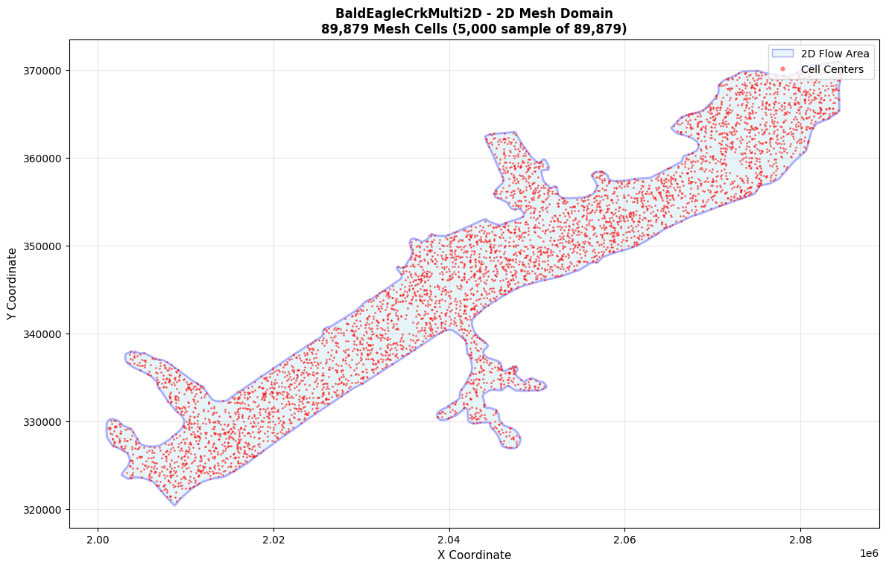
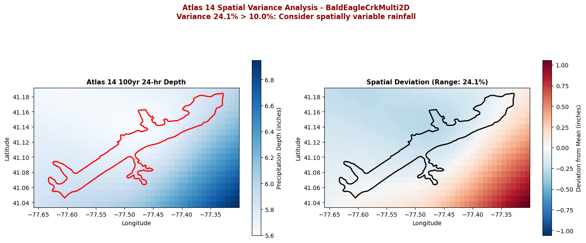
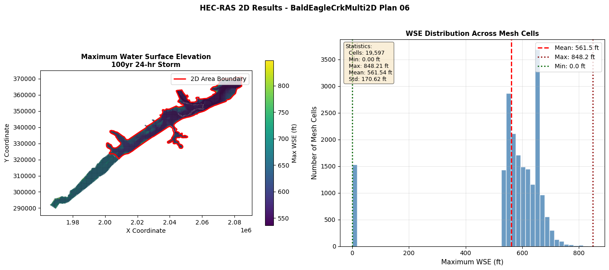

Gridded Precipitation for Rain-on-Grid 2D Modeling¶
Purpose¶
This notebook demonstrates gridded precipitation (rain-on-grid) workflows for 2D HEC-RAS models using HMS-validated precipitation methods. Unlike hydrograph boundary conditions, gridded precipitation applies directly to mesh cells.
Scope: Gridded precipitation for 2D rain-on-grid models
For hydrograph boundary condition workflows, see:
- 721_atlas14_comprehensive_workflow.ipynb - Complete hydrograph BC workflow with bulk execution
Workflow Overview¶
- Project Setup - Extract BaldEagleCrkMulti2D project (configured for gridded precipitation)
- Mesh Analysis - Extract and visualize 2D mesh cells that receive precipitation
- Storm Generation - Generate uniform storms using all HMS-validated methods
- Spatial Variance Assessment - Assess whether uniform rainfall is appropriate
- Gridded Precipitation Concept - Future conversion workflow (placeholder)
- Execution - Optional plan execution with results extraction
Key Difference: Gridded vs Hydrograph Precipitation¶
| Aspect | Hydrograph BC (Notebook 721) | Gridded Precipitation (This Notebook) |
|---|---|---|
| Input Type | Time series at boundary | Spatially distributed over mesh |
| Application | Upstream/downstream BCs | Rain-on-grid 2D modeling |
| Project | Davis (1D inflows) | BaldEagleCrkMulti2D (2D mesh) |
| Spatial Variance | Not applicable | Critical consideration |
Prerequisites¶
- HEC-RAS 6.5+ installed (for plan execution)
- hms-commander package (for HMS-equivalent methods)
- BaldEagleCrkMulti2D example project (included with ras-commander)
Related Notebooks¶
720_precipitation_methods_comprehensive.ipynb- Method comparison (no execution)721_atlas14_comprehensive_workflow.ipynb- Hydrograph BC workflow725_atlas14_spatial_variance.ipynb- Spatial variance analysis (detailed)
Part 1: Setup and Imports¶
# =============================================================================
# DEVELOPMENT MODE TOGGLE
# =============================================================================
USE_LOCAL_SOURCE = True # Set to True for local development, False for pip package
if USE_LOCAL_SOURCE:
import sys
from pathlib import Path
local_path = str(Path.cwd().parent)
if local_path not in sys.path:
sys.path.insert(0, local_path)
print(f"LOCAL SOURCE MODE: Loading from {local_path}/ras_commander")
else:
print("PIP PACKAGE MODE: Loading installed ras-commander")
# Import ras-commander core
from ras_commander import (
RasExamples,
init_ras_project,
ras,
RasCmdr,
RasPlan,
RasPrj
)
from ras_commander.hdf import HdfResultsPlan, HdfMesh
# Import precipitation modules
from ras_commander.precip import (
StormGenerator, # Alternating Block Method (NOT HMS-equivalent)
Atlas14Storm, # HMS-equivalent Atlas 14 temporal distributions
FrequencyStorm, # HMS-equivalent TP-40 temporal pattern
ScsTypeStorm, # HMS-equivalent SCS Type I/IA/II/III
Atlas14Grid, # Gridded PFE access
Atlas14Variance, # Spatial variance analysis
ATLAS14_AVAILABLE, # Availability flag for Atlas14Storm
FREQUENCY_STORM_AVAILABLE, # Availability flag for FrequencyStorm
SCS_TYPE_AVAILABLE # Availability flag for ScsTypeStorm
)
import ras_commander
print(f"Loaded ras_commander: {ras_commander.__file__}")
# Check HMS-equivalent method availability
print(f"\nHMS-Equivalent Methods Availability:")
print(f" Atlas14Storm: {'[OK]' if ATLAS14_AVAILABLE else '[--]'}")
print(f" FrequencyStorm: {'[OK]' if FREQUENCY_STORM_AVAILABLE else '[--]'}")
print(f" ScsTypeStorm: {'[OK]' if SCS_TYPE_AVAILABLE else '[--]'}")
if not (ATLAS14_AVAILABLE and FREQUENCY_STORM_AVAILABLE and SCS_TYPE_AVAILABLE):
print("\n Install hms-commander for all HMS-equivalent methods:")
print(" pip install hms-commander")
LOCAL SOURCE MODE: Loading from c:\GH\ras-commander/ras_commander
Loaded ras_commander: c:\GH\ras-commander\ras_commander\__init__.py
HMS-Equivalent Methods Availability:
Atlas14Storm: [OK]
FrequencyStorm: [OK]
ScsTypeStorm: [OK]
import numpy as np
import pandas as pd
import matplotlib.pyplot as plt
from pathlib import Path
from datetime import datetime
import warnings
warnings.filterwarnings('ignore', category=DeprecationWarning)
# Configure output
pd.set_option('display.max_rows', 50)
pd.set_option('display.float_format', '{:.4f}'.format)
print("Standard libraries imported successfully")
Standard libraries imported successfully
# =============================================================================
# CONFIGURATION - Edit these for your project
# =============================================================================
# Project Configuration
PROJECT_NAME = "BaldEagleCrkMulti2D" # Example project with 2D mesh
RAS_VERSION = "6.6" # HEC-RAS version
TEMPLATE_PLAN = "06" # Plan 06 is configured for gridded precipitation
# Storm Parameters
STORM_DURATION_HOURS = 24 # 24-hour storm
TIME_INTERVAL_MIN = 60 # 1-hour intervals for output
# Demonstration AEP (single event for this notebook)
# Using 100-year event as representative design storm
DEMO_AEP_PERCENT = 1.0 # 1% AEP = 100-year event
DEMO_AEP_NAME = "100yr"
# Execution Control
# WARNING: Set to True to execute HEC-RAS Plan 06
EXECUTE_PLAN = True # Set to True to run HEC-RAS
NUM_CORES = 2 # CPU cores for execution
# Spatial Variance Threshold
# If variance exceeds this threshold, spatially variable rainfall should be considered
VARIANCE_THRESHOLD_PCT = 10.0 # Percent range threshold
print("Configuration Summary:")
print(f" Project: {PROJECT_NAME}")
print(f" Plan: {TEMPLATE_PLAN} (configured for gridded precipitation)")
print(f" Storm Duration: {STORM_DURATION_HOURS} hours")
print(f" Demo AEP: {DEMO_AEP_NAME} ({DEMO_AEP_PERCENT}% AEP)")
print(f" Execute Plan: {EXECUTE_PLAN}")
print(f" Variance Threshold: {VARIANCE_THRESHOLD_PCT}%")
Configuration Summary:
Project: BaldEagleCrkMulti2D
Plan: 06 (configured for gridded precipitation)
Storm Duration: 24 hours
Demo AEP: 100yr (1.0% AEP)
Execute Plan: True
Variance Threshold: 10.0%
# =============================================================================
# 1.1 Extract Example Project
# =============================================================================
print("Extracting BaldEagleCrkMulti2D example project...")
try:
# Extract with suffix to avoid conflicts
project_path = RasExamples.extract_project(PROJECT_NAME, suffix="722_gridded")
print(f"[OK] Extracted to: {project_path}")
# Verify path exists
if not project_path.exists():
raise FileNotFoundError(f"Project not found at {project_path}")
PROJECT_AVAILABLE = True
except Exception as e:
print(f"[!!] Error extracting project: {e}")
PROJECT_AVAILABLE = False
project_path = None
2026-01-06 21:10:26 - ras_commander.RasExamples - INFO - Found zip file: C:\GH\ras-commander\examples\Example_Projects_6_6.zip
2026-01-06 21:10:26 - ras_commander.RasExamples - INFO - Found zip file: C:\GH\ras-commander\examples\Example_Projects_6_6.zip
2026-01-06 21:10:26 - ras_commander.RasExamples - INFO - Loading project data from CSV...
2026-01-06 21:10:26 - ras_commander.RasExamples - INFO - Loading project data from CSV...
2026-01-06 21:10:26 - ras_commander.RasExamples - INFO - Loaded 68 projects from CSV.
2026-01-06 21:10:26 - ras_commander.RasExamples - INFO - Loaded 68 projects from CSV.
2026-01-06 21:10:26 - ras_commander.RasExamples - INFO - ----- RasExamples Extracting Project -----
2026-01-06 21:10:26 - ras_commander.RasExamples - INFO - ----- RasExamples Extracting Project -----
2026-01-06 21:10:26 - ras_commander.RasExamples - INFO - Extracting project 'BaldEagleCrkMulti2D' as 'BaldEagleCrkMulti2D_722_gridded'
2026-01-06 21:10:26 - ras_commander.RasExamples - INFO - Extracting project 'BaldEagleCrkMulti2D' as 'BaldEagleCrkMulti2D_722_gridded'
2026-01-06 21:10:26 - ras_commander.RasExamples - INFO - Folder 'BaldEagleCrkMulti2D_722_gridded' already exists. Deleting existing folder...
2026-01-06 21:10:26 - ras_commander.RasExamples - INFO - Folder 'BaldEagleCrkMulti2D_722_gridded' already exists. Deleting existing folder...
2026-01-06 21:10:26 - ras_commander.RasExamples - INFO - Existing folder 'BaldEagleCrkMulti2D_722_gridded' has been deleted.
2026-01-06 21:10:26 - ras_commander.RasExamples - INFO - Existing folder 'BaldEagleCrkMulti2D_722_gridded' has been deleted.
Extracting BaldEagleCrkMulti2D example project...
2026-01-06 21:10:28 - ras_commander.RasExamples - INFO - Successfully extracted project 'BaldEagleCrkMulti2D' to C:\GH\ras-commander\examples\example_projects\BaldEagleCrkMulti2D_722_gridded
2026-01-06 21:10:28 - ras_commander.RasExamples - INFO - Successfully extracted project 'BaldEagleCrkMulti2D' to C:\GH\ras-commander\examples\example_projects\BaldEagleCrkMulti2D_722_gridded
[OK] Extracted to: C:\GH\ras-commander\examples\example_projects\BaldEagleCrkMulti2D_722_gridded
# =============================================================================
# 1.2 Initialize Project
# =============================================================================
if PROJECT_AVAILABLE:
print("Initializing HEC-RAS project...")
init_ras_project(project_path, RAS_VERSION)
print(f"\n[OK] Project initialized: {ras.project_name}")
print(f" Project folder: {ras.project_folder}")
print(f" Plans available: {len(ras.plan_df)}")
print(f" Geometries available: {len(ras.geom_df)}")
# Display available plans
print("\nAvailable Plans:")
display(ras.plan_df[['plan_number', 'Plan Title', 'Geom File', 'Flow File']])
else:
print("[!!] Project not available - cannot continue")
2026-01-06 21:10:28 - ras_commander.RasMap - INFO - Successfully parsed RASMapper file: C:\GH\ras-commander\examples\example_projects\BaldEagleCrkMulti2D_722_gridded\BaldEagleDamBrk.rasmap
2026-01-06 21:10:28 - ras_commander.RasMap - INFO - Successfully parsed RASMapper file: C:\GH\ras-commander\examples\example_projects\BaldEagleCrkMulti2D_722_gridded\BaldEagleDamBrk.rasmap
Initializing HEC-RAS project...
[OK] Project initialized: BaldEagleDamBrk
Project folder: C:\GH\ras-commander\examples\example_projects\BaldEagleCrkMulti2D_722_gridded
Plans available: 11
Geometries available: 10
Available Plans:
| plan_number | Plan Title | Geom File | Flow File | |
|---|---|---|---|---|
| 0 | 13 | PMF with Multi 2D Areas | 06 | 07 |
| 1 | 15 | 1d-2D Dambreak Refined Grid | 08 | 12 |
| 2 | 17 | 2D to 1D No Dam | 10 | 09 |
| 3 | 18 | 2D to 2D Run | 11 | 10 |
| 4 | 19 | SA to 2D Dam Break Run | 12 | 11 |
| 5 | 03 | Single 2D Area - Internal Dam Structure | 09 | 13 |
| 6 | 04 | SA to 2D Area Conn - 2D Levee Structure | 13 | 01 |
| 7 | 02 | SA to Detailed 2D Breach | 01 | 01 |
| 8 | 01 | SA to Detailed 2D Breach FEQ | 01 | 01 |
| 9 | 05 | Single 2D area with Bridges FEQ | 03 | 02 |
| 10 | 06 | Gridded Precip - Infiltration | 09 | 03 |
# =============================================================================
# 1.3 Verify Gridded Precipitation Configuration
# =============================================================================
if PROJECT_AVAILABLE:
print(f"Verifying Plan {TEMPLATE_PLAN} for gridded precipitation...")
# Check if plan exists
plan_row = ras.plan_df[ras.plan_df['plan_number'] == TEMPLATE_PLAN]
if len(plan_row) > 0:
print(f"\n[OK] Plan {TEMPLATE_PLAN} found:")
print(f" Title: {plan_row['Plan Title'].values[0]}")
print(f" Geometry: {plan_row['Geom File'].values[0]}")
print(f" Flow: {plan_row['Flow File'].values[0]}")
PLAN_AVAILABLE = True
else:
print(f"\n[!!] Plan {TEMPLATE_PLAN} not found!")
print(f" Available plans: {ras.plan_df['plan_number'].tolist()}")
PLAN_AVAILABLE = False
# Find geometry HDF
geom_hdfs = list(project_path.glob("*.g*.hdf"))
if geom_hdfs:
geom_hdf = geom_hdfs[0]
print(f"\n[OK] Geometry HDF: {geom_hdf.name}")
else:
print("\n[!!] No geometry HDF found")
geom_hdf = None
else:
PLAN_AVAILABLE = False
geom_hdf = None
Verifying Plan 06 for gridded precipitation...
[OK] Plan 06 found:
Title: Gridded Precip - Infiltration
Geometry: 09
Flow: 03
[OK] Geometry HDF: BaldEagleDamBrk.g01.hdf
Part 2: Mesh Analysis¶
Extract and visualize the 2D mesh cells that will receive precipitation. Each mesh cell in a rain-on-grid model receives precipitation input independently.
# =============================================================================
# 2.1 Get 2D Mesh Area Names
# =============================================================================
if PROJECT_AVAILABLE and geom_hdf:
print("Extracting 2D mesh area names...")
mesh_area_names = HdfMesh.get_mesh_area_names(geom_hdf)
if mesh_area_names:
print(f"\n[OK] Found {len(mesh_area_names)} 2D flow area(s):")
for name in mesh_area_names:
print(f" - {name}")
else:
print("\n[!!] No 2D flow areas found in geometry")
else:
print("[!!] Project or geometry HDF not available")
mesh_area_names = []
2026-01-06 21:10:28 - ras_commander.hdf.HdfMesh - INFO - Using existing Path object HDF file: C:\GH\ras-commander\examples\example_projects\BaldEagleCrkMulti2D_722_gridded\BaldEagleDamBrk.g01.hdf
2026-01-06 21:10:28 - ras_commander.hdf.HdfMesh - INFO - Using existing Path object HDF file: C:\GH\ras-commander\examples\example_projects\BaldEagleCrkMulti2D_722_gridded\BaldEagleDamBrk.g01.hdf
2026-01-06 21:10:28 - ras_commander.hdf.HdfMesh - INFO - Final validated file path: C:\GH\ras-commander\examples\example_projects\BaldEagleCrkMulti2D_722_gridded\BaldEagleDamBrk.g01.hdf
2026-01-06 21:10:28 - ras_commander.hdf.HdfMesh - INFO - Final validated file path: C:\GH\ras-commander\examples\example_projects\BaldEagleCrkMulti2D_722_gridded\BaldEagleDamBrk.g01.hdf
Extracting 2D mesh area names...
[OK] Found 1 2D flow area(s):
- BaldEagleCr
# =============================================================================
# 2.2 Extract Mesh Cell Points
# =============================================================================
if PROJECT_AVAILABLE and geom_hdf and mesh_area_names:
print("Extracting mesh cell center points...")
try:
mesh_cells_gdf = HdfMesh.get_mesh_cell_points(geom_hdf)
print(f"\n[OK] Extracted {len(mesh_cells_gdf)} mesh cell center points")
print(f"\nMesh cell statistics:")
print(f" Total cells: {len(mesh_cells_gdf)}")
# Show by mesh area
if 'mesh_name' in mesh_cells_gdf.columns:
print(f"\nCells by 2D flow area:")
cell_counts = mesh_cells_gdf.groupby('mesh_name').size()
for name, count in cell_counts.items():
print(f" {name}: {count:,} cells")
# Show sample
print(f"\nSample cells:")
display(mesh_cells_gdf.head())
except Exception as e:
print(f"[!!] Error extracting mesh cells: {e}")
mesh_cells_gdf = None
else:
print("[!!] Cannot extract mesh cells - prerequisites not available")
mesh_cells_gdf = None
2026-01-06 21:10:28 - ras_commander.hdf.HdfMesh - INFO - Using existing Path object HDF file: C:\GH\ras-commander\examples\example_projects\BaldEagleCrkMulti2D_722_gridded\BaldEagleDamBrk.g01.hdf
2026-01-06 21:10:28 - ras_commander.hdf.HdfMesh - INFO - Using existing Path object HDF file: C:\GH\ras-commander\examples\example_projects\BaldEagleCrkMulti2D_722_gridded\BaldEagleDamBrk.g01.hdf
2026-01-06 21:10:28 - ras_commander.hdf.HdfMesh - INFO - Final validated file path: C:\GH\ras-commander\examples\example_projects\BaldEagleCrkMulti2D_722_gridded\BaldEagleDamBrk.g01.hdf
2026-01-06 21:10:28 - ras_commander.hdf.HdfMesh - INFO - Final validated file path: C:\GH\ras-commander\examples\example_projects\BaldEagleCrkMulti2D_722_gridded\BaldEagleDamBrk.g01.hdf
2026-01-06 21:10:28 - ras_commander.hdf.HdfMesh - INFO - Using existing Path object HDF file: C:\GH\ras-commander\examples\example_projects\BaldEagleCrkMulti2D_722_gridded\BaldEagleDamBrk.g01.hdf
2026-01-06 21:10:28 - ras_commander.hdf.HdfMesh - INFO - Using existing Path object HDF file: C:\GH\ras-commander\examples\example_projects\BaldEagleCrkMulti2D_722_gridded\BaldEagleDamBrk.g01.hdf
2026-01-06 21:10:28 - ras_commander.hdf.HdfMesh - INFO - Final validated file path: C:\GH\ras-commander\examples\example_projects\BaldEagleCrkMulti2D_722_gridded\BaldEagleDamBrk.g01.hdf
2026-01-06 21:10:28 - ras_commander.hdf.HdfMesh - INFO - Final validated file path: C:\GH\ras-commander\examples\example_projects\BaldEagleCrkMulti2D_722_gridded\BaldEagleDamBrk.g01.hdf
Extracting mesh cell center points...
2026-01-06 21:10:29 - ras_commander.hdf.HdfBase - INFO - Using HDF file from h5py.File object: C:\GH\ras-commander\examples\example_projects\BaldEagleCrkMulti2D_722_gridded\BaldEagleDamBrk.g01.hdf
2026-01-06 21:10:29 - ras_commander.hdf.HdfBase - INFO - Using HDF file from h5py.File object: C:\GH\ras-commander\examples\example_projects\BaldEagleCrkMulti2D_722_gridded\BaldEagleDamBrk.g01.hdf
2026-01-06 21:10:29 - ras_commander.hdf.HdfBase - INFO - Final validated file path: C:\GH\ras-commander\examples\example_projects\BaldEagleCrkMulti2D_722_gridded\BaldEagleDamBrk.g01.hdf
2026-01-06 21:10:29 - ras_commander.hdf.HdfBase - INFO - Final validated file path: C:\GH\ras-commander\examples\example_projects\BaldEagleCrkMulti2D_722_gridded\BaldEagleDamBrk.g01.hdf
2026-01-06 21:10:29 - ras_commander.hdf.HdfBase - INFO - Found projection in RASMapper file: C:\GH\ras-commander\examples\example_projects\BaldEagleCrkMulti2D_722_gridded\Terrain\Projection.prj
2026-01-06 21:10:29 - ras_commander.hdf.HdfBase - INFO - Found projection in RASMapper file: C:\GH\ras-commander\examples\example_projects\BaldEagleCrkMulti2D_722_gridded\Terrain\Projection.prj
2026-01-06 21:10:29 - ras_commander.hdf.HdfBase - INFO - Converted WKT to EPSG:2271 from RASMapper file Projection.prj
2026-01-06 21:10:29 - ras_commander.hdf.HdfBase - INFO - Converted WKT to EPSG:2271 from RASMapper file Projection.prj
[OK] Extracted 89879 mesh cell center points
Mesh cell statistics:
Total cells: 89879
Cells by 2D flow area:
BaldEagleCr: 89,879 cells
Sample cells:
| mesh_name | cell_id | geometry | |
|---|---|---|---|
| 0 | BaldEagleCr | 0 | POINT (2083700 370900) |
| 1 | BaldEagleCr | 1 | POINT (2083800 370900) |
| 2 | BaldEagleCr | 2 | POINT (2083900 370900) |
| 3 | BaldEagleCr | 3 | POINT (2084000 370900) |
| 4 | BaldEagleCr | 4 | POINT (2084100 370900) |
# =============================================================================
# 2.3 Extract Mesh Area Perimeters
# =============================================================================
if PROJECT_AVAILABLE and geom_hdf:
print("Extracting 2D flow area perimeters...")
try:
mesh_areas_gdf = HdfMesh.get_mesh_areas(geom_hdf)
if len(mesh_areas_gdf) > 0:
print(f"\n[OK] Extracted {len(mesh_areas_gdf)} 2D flow area perimeter(s)")
# Calculate area in square miles (approximate)
# Note: This assumes projected CRS - actual calculation depends on projection
print(f"\nFlow area bounds:")
bounds = mesh_areas_gdf.total_bounds
print(f" Min X: {bounds[0]:.2f}")
print(f" Min Y: {bounds[1]:.2f}")
print(f" Max X: {bounds[2]:.2f}")
print(f" Max Y: {bounds[3]:.2f}")
else:
print("\n[!!] No mesh area perimeters found")
except Exception as e:
print(f"[!!] Error extracting mesh areas: {e}")
mesh_areas_gdf = None
else:
mesh_areas_gdf = None
2026-01-06 21:10:29 - ras_commander.hdf.HdfMesh - INFO - Using existing Path object HDF file: C:\GH\ras-commander\examples\example_projects\BaldEagleCrkMulti2D_722_gridded\BaldEagleDamBrk.g01.hdf
2026-01-06 21:10:29 - ras_commander.hdf.HdfMesh - INFO - Using existing Path object HDF file: C:\GH\ras-commander\examples\example_projects\BaldEagleCrkMulti2D_722_gridded\BaldEagleDamBrk.g01.hdf
2026-01-06 21:10:29 - ras_commander.hdf.HdfMesh - INFO - Final validated file path: C:\GH\ras-commander\examples\example_projects\BaldEagleCrkMulti2D_722_gridded\BaldEagleDamBrk.g01.hdf
2026-01-06 21:10:29 - ras_commander.hdf.HdfMesh - INFO - Final validated file path: C:\GH\ras-commander\examples\example_projects\BaldEagleCrkMulti2D_722_gridded\BaldEagleDamBrk.g01.hdf
2026-01-06 21:10:29 - ras_commander.hdf.HdfMesh - INFO - Using existing Path object HDF file: C:\GH\ras-commander\examples\example_projects\BaldEagleCrkMulti2D_722_gridded\BaldEagleDamBrk.g01.hdf
2026-01-06 21:10:29 - ras_commander.hdf.HdfMesh - INFO - Using existing Path object HDF file: C:\GH\ras-commander\examples\example_projects\BaldEagleCrkMulti2D_722_gridded\BaldEagleDamBrk.g01.hdf
2026-01-06 21:10:29 - ras_commander.hdf.HdfMesh - INFO - Final validated file path: C:\GH\ras-commander\examples\example_projects\BaldEagleCrkMulti2D_722_gridded\BaldEagleDamBrk.g01.hdf
2026-01-06 21:10:29 - ras_commander.hdf.HdfMesh - INFO - Final validated file path: C:\GH\ras-commander\examples\example_projects\BaldEagleCrkMulti2D_722_gridded\BaldEagleDamBrk.g01.hdf
2026-01-06 21:10:29 - ras_commander.hdf.HdfBase - INFO - Using HDF file from h5py.File object: C:\GH\ras-commander\examples\example_projects\BaldEagleCrkMulti2D_722_gridded\BaldEagleDamBrk.g01.hdf
2026-01-06 21:10:29 - ras_commander.hdf.HdfBase - INFO - Using HDF file from h5py.File object: C:\GH\ras-commander\examples\example_projects\BaldEagleCrkMulti2D_722_gridded\BaldEagleDamBrk.g01.hdf
2026-01-06 21:10:29 - ras_commander.hdf.HdfBase - INFO - Final validated file path: C:\GH\ras-commander\examples\example_projects\BaldEagleCrkMulti2D_722_gridded\BaldEagleDamBrk.g01.hdf
2026-01-06 21:10:29 - ras_commander.hdf.HdfBase - INFO - Final validated file path: C:\GH\ras-commander\examples\example_projects\BaldEagleCrkMulti2D_722_gridded\BaldEagleDamBrk.g01.hdf
2026-01-06 21:10:29 - ras_commander.hdf.HdfBase - INFO - Found projection in RASMapper file: C:\GH\ras-commander\examples\example_projects\BaldEagleCrkMulti2D_722_gridded\Terrain\Projection.prj
2026-01-06 21:10:29 - ras_commander.hdf.HdfBase - INFO - Found projection in RASMapper file: C:\GH\ras-commander\examples\example_projects\BaldEagleCrkMulti2D_722_gridded\Terrain\Projection.prj
2026-01-06 21:10:29 - ras_commander.hdf.HdfBase - INFO - Converted WKT to EPSG:2271 from RASMapper file Projection.prj
2026-01-06 21:10:29 - ras_commander.hdf.HdfBase - INFO - Converted WKT to EPSG:2271 from RASMapper file Projection.prj
Extracting 2D flow area perimeters...
[OK] Extracted 1 2D flow area perimeter(s)
Flow area bounds:
Min X: 2000930.70
Min Y: 320392.94
Max X: 2084790.14
Max Y: 371007.58
# =============================================================================
# 2.4 Visualize Mesh Domain
# =============================================================================
if mesh_cells_gdf is not None and mesh_areas_gdf is not None:
print("Visualizing mesh domain...")
fig, ax = plt.subplots(figsize=(12, 8))
# Plot mesh area perimeters
mesh_areas_gdf.plot(ax=ax, facecolor='lightblue', edgecolor='blue',
linewidth=2, alpha=0.3)
# Plot mesh cell points (sample if too many)
n_cells = len(mesh_cells_gdf)
if n_cells > 5000:
# Sample for visualization
sample_gdf = mesh_cells_gdf.sample(n=5000, random_state=42)
sample_note = f" (5,000 sample of {n_cells:,})"
else:
sample_gdf = mesh_cells_gdf
sample_note = ""
sample_gdf.plot(ax=ax, markersize=1, color='red', alpha=0.5)
# Create custom legend handles (geopandas plot doesn't support 'label' well)
from matplotlib.patches import Patch
from matplotlib.lines import Line2D
legend_elements = [
Patch(facecolor='lightblue', edgecolor='blue', alpha=0.3, label='2D Flow Area'),
Line2D([0], [0], marker='o', color='w', markerfacecolor='red',
markersize=5, alpha=0.5, label='Cell Centers')
]
ax.legend(handles=legend_elements, loc='upper right')
ax.set_xlabel('X Coordinate', fontsize=11)
ax.set_ylabel('Y Coordinate', fontsize=11)
title_str = (f'BaldEagleCrkMulti2D - 2D Mesh Domain\n'
f'{n_cells:,} Mesh Cells{sample_note}')
ax.set_title(title_str,
fontsize=12, fontweight='bold')
ax.grid(True, alpha=0.3)
plt.tight_layout()
plt.show()
print("[OK] Mesh domain visualized")
print(f"Note: In rain-on-grid modeling, each of these {n_cells:,} cells")
print(" receives precipitation input independently.")
else:
print("[--] Cannot visualize - mesh data not available")
Visualizing mesh domain...

[OK] Mesh domain visualized
Note: In rain-on-grid modeling, each of these 89,879 cells
receives precipitation input independently.
Part 3: Generate Uniform Storms (All HMS Methods)¶
For demonstration purposes, we generate uniform (spatially invariant) storms. In uniform rainfall, every mesh cell receives the same precipitation depth over time.
This notebook generates representative storms using all 4 available HMS methods: 1. Atlas14Storm - 2 quartiles (All Cases, Fourth Quartile) 2. FrequencyStorm - TP-40 pattern 3. ScsTypeStorm - Type II (standard for most of US)
Note: These are uniform storms - the depth is the same everywhere. Part 4 assesses whether spatial variation is needed.
# =============================================================================
# 3.1 Get Representative Precipitation Depth
# =============================================================================
if PROJECT_AVAILABLE and geom_hdf:
print("Getting representative precipitation depth for model domain...")
try:
# Use Atlas14Variance to get representative depth
quick_stats = Atlas14Variance.analyze_quick(
geom_hdf=geom_hdf,
duration=STORM_DURATION_HOURS,
return_period=int(100 / DEMO_AEP_PERCENT) # Convert AEP to return period
)
# Use mean depth for uniform rainfall
TOTAL_DEPTH_INCHES = quick_stats['mean']
print(f"\n[OK] Atlas 14 PFE for project domain ({DEMO_AEP_NAME}, {STORM_DURATION_HOURS}-hr):")
print(f" Min: {quick_stats['min']:.2f} inches")
print(f" Max: {quick_stats['max']:.2f} inches")
print(f" Mean: {quick_stats['mean']:.2f} inches (using for uniform rainfall)")
print(f" Range: {quick_stats['range']:.2f} inches ({quick_stats['range_pct']:.1f}%)")
DEPTH_AVAILABLE = True
except Exception as e:
print(f"[!!] Error getting precipitation depth: {e}")
print("\nUsing default depth for demonstration...")
TOTAL_DEPTH_INCHES = 5.75 # Approximate for Pennsylvania 100-yr 24-hr
DEPTH_AVAILABLE = False
print(f"\nUsing total depth: {TOTAL_DEPTH_INCHES:.2f} inches")
else:
print("[!!] Project not available")
TOTAL_DEPTH_INCHES = 5.75
DEPTH_AVAILABLE = False
2026-01-06 21:10:29 - ras_commander.precip.Atlas14Variance - INFO - Starting Atlas 14 variance analysis for BaldEagleDamBrk.g01.hdf
2026-01-06 21:10:29 - ras_commander.precip.Atlas14Variance - INFO - Starting Atlas 14 variance analysis for BaldEagleDamBrk.g01.hdf
2026-01-06 21:10:29 - ras_commander.precip.Atlas14Variance - INFO - Durations: [24] hours, Return periods: [100] years
2026-01-06 21:10:29 - ras_commander.precip.Atlas14Variance - INFO - Durations: [24] hours, Return periods: [100] years
2026-01-06 21:10:29 - ras_commander.precip.Atlas14Grid - INFO - Extracting extent from C:\GH\ras-commander\examples\example_projects\BaldEagleCrkMulti2D_722_gridded\BaldEagleDamBrk.g01.hdf using 2d_flow_area
2026-01-06 21:10:29 - ras_commander.precip.Atlas14Grid - INFO - Extracting extent from C:\GH\ras-commander\examples\example_projects\BaldEagleCrkMulti2D_722_gridded\BaldEagleDamBrk.g01.hdf using 2d_flow_area
2026-01-06 21:10:29 - ras_commander.hdf.HdfMesh - INFO - Using existing Path object HDF file: C:\GH\ras-commander\examples\example_projects\BaldEagleCrkMulti2D_722_gridded\BaldEagleDamBrk.g01.hdf
2026-01-06 21:10:29 - ras_commander.hdf.HdfMesh - INFO - Using existing Path object HDF file: C:\GH\ras-commander\examples\example_projects\BaldEagleCrkMulti2D_722_gridded\BaldEagleDamBrk.g01.hdf
2026-01-06 21:10:29 - ras_commander.hdf.HdfMesh - INFO - Final validated file path: C:\GH\ras-commander\examples\example_projects\BaldEagleCrkMulti2D_722_gridded\BaldEagleDamBrk.g01.hdf
2026-01-06 21:10:29 - ras_commander.hdf.HdfMesh - INFO - Final validated file path: C:\GH\ras-commander\examples\example_projects\BaldEagleCrkMulti2D_722_gridded\BaldEagleDamBrk.g01.hdf
2026-01-06 21:10:29 - ras_commander.hdf.HdfMesh - INFO - Using existing Path object HDF file: C:\GH\ras-commander\examples\example_projects\BaldEagleCrkMulti2D_722_gridded\BaldEagleDamBrk.g01.hdf
2026-01-06 21:10:29 - ras_commander.hdf.HdfMesh - INFO - Using existing Path object HDF file: C:\GH\ras-commander\examples\example_projects\BaldEagleCrkMulti2D_722_gridded\BaldEagleDamBrk.g01.hdf
2026-01-06 21:10:29 - ras_commander.hdf.HdfMesh - INFO - Final validated file path: C:\GH\ras-commander\examples\example_projects\BaldEagleCrkMulti2D_722_gridded\BaldEagleDamBrk.g01.hdf
2026-01-06 21:10:29 - ras_commander.hdf.HdfMesh - INFO - Final validated file path: C:\GH\ras-commander\examples\example_projects\BaldEagleCrkMulti2D_722_gridded\BaldEagleDamBrk.g01.hdf
2026-01-06 21:10:29 - ras_commander.hdf.HdfBase - INFO - Using HDF file from h5py.File object: C:\GH\ras-commander\examples\example_projects\BaldEagleCrkMulti2D_722_gridded\BaldEagleDamBrk.g01.hdf
2026-01-06 21:10:29 - ras_commander.hdf.HdfBase - INFO - Using HDF file from h5py.File object: C:\GH\ras-commander\examples\example_projects\BaldEagleCrkMulti2D_722_gridded\BaldEagleDamBrk.g01.hdf
2026-01-06 21:10:29 - ras_commander.hdf.HdfBase - INFO - Final validated file path: C:\GH\ras-commander\examples\example_projects\BaldEagleCrkMulti2D_722_gridded\BaldEagleDamBrk.g01.hdf
2026-01-06 21:10:29 - ras_commander.hdf.HdfBase - INFO - Final validated file path: C:\GH\ras-commander\examples\example_projects\BaldEagleCrkMulti2D_722_gridded\BaldEagleDamBrk.g01.hdf
2026-01-06 21:10:29 - ras_commander.hdf.HdfBase - INFO - Found projection in RASMapper file: C:\GH\ras-commander\examples\example_projects\BaldEagleCrkMulti2D_722_gridded\Terrain\Projection.prj
2026-01-06 21:10:29 - ras_commander.hdf.HdfBase - INFO - Found projection in RASMapper file: C:\GH\ras-commander\examples\example_projects\BaldEagleCrkMulti2D_722_gridded\Terrain\Projection.prj
2026-01-06 21:10:29 - ras_commander.hdf.HdfBase - INFO - Converted WKT to EPSG:2271 from RASMapper file Projection.prj
2026-01-06 21:10:29 - ras_commander.hdf.HdfBase - INFO - Converted WKT to EPSG:2271 from RASMapper file Projection.prj
2026-01-06 21:10:29 - ras_commander.precip.Atlas14Grid - INFO - 2D flow area bounds: W=-77.6324, S=41.0459, E=-77.3275, N=41.1842
2026-01-06 21:10:29 - ras_commander.precip.Atlas14Grid - INFO - 2D flow area bounds: W=-77.6324, S=41.0459, E=-77.3275, N=41.1842
2026-01-06 21:10:29 - ras_commander.precip.Atlas14Grid - INFO - Loading Atlas 14 coordinate arrays from remote file...
2026-01-06 21:10:29 - ras_commander.precip.Atlas14Grid - INFO - Loading Atlas 14 coordinate arrays from remote file...
Getting representative precipitation depth for model domain...
2026-01-06 21:10:40 - ras_commander.precip.Atlas14Grid - INFO - Loaded coordinates: lat=3121, lon=7081, ari=9
2026-01-06 21:10:40 - ras_commander.precip.Atlas14Grid - INFO - Loaded coordinates: lat=3121, lon=7081, ari=9
2026-01-06 21:10:40 - ras_commander.precip.Atlas14Grid - INFO - Extracting Atlas 14 data for bounds (-77.6629, 41.0321, -77.2970, 41.1980): lat[2044:2064], lon[5681:5725]
2026-01-06 21:10:40 - ras_commander.precip.Atlas14Grid - INFO - Extracting Atlas 14 data for bounds (-77.6629, 41.0321, -77.2970, 41.1980): lat[2044:2064], lon[5681:5725]
2026-01-06 21:10:45 - ras_commander.precip.Atlas14Grid - INFO - Data transfer: 15.5 KB (vs 379.4 MB full grid, 100.0% reduction)
2026-01-06 21:10:45 - ras_commander.precip.Atlas14Grid - INFO - Data transfer: 15.5 KB (vs 379.4 MB full grid, 100.0% reduction)
2026-01-06 21:10:45 - ras_commander.hdf.HdfMesh - INFO - Using existing Path object HDF file: C:\GH\ras-commander\examples\example_projects\BaldEagleCrkMulti2D_722_gridded\BaldEagleDamBrk.g01.hdf
2026-01-06 21:10:45 - ras_commander.hdf.HdfMesh - INFO - Using existing Path object HDF file: C:\GH\ras-commander\examples\example_projects\BaldEagleCrkMulti2D_722_gridded\BaldEagleDamBrk.g01.hdf
2026-01-06 21:10:45 - ras_commander.hdf.HdfMesh - INFO - Final validated file path: C:\GH\ras-commander\examples\example_projects\BaldEagleCrkMulti2D_722_gridded\BaldEagleDamBrk.g01.hdf
2026-01-06 21:10:45 - ras_commander.hdf.HdfMesh - INFO - Final validated file path: C:\GH\ras-commander\examples\example_projects\BaldEagleCrkMulti2D_722_gridded\BaldEagleDamBrk.g01.hdf
2026-01-06 21:10:45 - ras_commander.hdf.HdfMesh - INFO - Using existing Path object HDF file: C:\GH\ras-commander\examples\example_projects\BaldEagleCrkMulti2D_722_gridded\BaldEagleDamBrk.g01.hdf
2026-01-06 21:10:45 - ras_commander.hdf.HdfMesh - INFO - Using existing Path object HDF file: C:\GH\ras-commander\examples\example_projects\BaldEagleCrkMulti2D_722_gridded\BaldEagleDamBrk.g01.hdf
2026-01-06 21:10:45 - ras_commander.hdf.HdfMesh - INFO - Final validated file path: C:\GH\ras-commander\examples\example_projects\BaldEagleCrkMulti2D_722_gridded\BaldEagleDamBrk.g01.hdf
2026-01-06 21:10:45 - ras_commander.hdf.HdfMesh - INFO - Final validated file path: C:\GH\ras-commander\examples\example_projects\BaldEagleCrkMulti2D_722_gridded\BaldEagleDamBrk.g01.hdf
2026-01-06 21:10:45 - ras_commander.hdf.HdfBase - INFO - Using HDF file from h5py.File object: C:\GH\ras-commander\examples\example_projects\BaldEagleCrkMulti2D_722_gridded\BaldEagleDamBrk.g01.hdf
2026-01-06 21:10:45 - ras_commander.hdf.HdfBase - INFO - Using HDF file from h5py.File object: C:\GH\ras-commander\examples\example_projects\BaldEagleCrkMulti2D_722_gridded\BaldEagleDamBrk.g01.hdf
2026-01-06 21:10:45 - ras_commander.hdf.HdfBase - INFO - Final validated file path: C:\GH\ras-commander\examples\example_projects\BaldEagleCrkMulti2D_722_gridded\BaldEagleDamBrk.g01.hdf
2026-01-06 21:10:45 - ras_commander.hdf.HdfBase - INFO - Final validated file path: C:\GH\ras-commander\examples\example_projects\BaldEagleCrkMulti2D_722_gridded\BaldEagleDamBrk.g01.hdf
2026-01-06 21:10:45 - ras_commander.hdf.HdfBase - INFO - Found projection in RASMapper file: C:\GH\ras-commander\examples\example_projects\BaldEagleCrkMulti2D_722_gridded\Terrain\Projection.prj
2026-01-06 21:10:45 - ras_commander.hdf.HdfBase - INFO - Found projection in RASMapper file: C:\GH\ras-commander\examples\example_projects\BaldEagleCrkMulti2D_722_gridded\Terrain\Projection.prj
2026-01-06 21:10:45 - ras_commander.hdf.HdfBase - INFO - Converted WKT to EPSG:2271 from RASMapper file Projection.prj
2026-01-06 21:10:45 - ras_commander.hdf.HdfBase - INFO - Converted WKT to EPSG:2271 from RASMapper file Projection.prj
2026-01-06 21:10:45 - ras_commander.precip.Atlas14Variance - INFO - Analyzing mesh area: BaldEagleCr
2026-01-06 21:10:45 - ras_commander.precip.Atlas14Variance - INFO - Analyzing mesh area: BaldEagleCr
2026-01-06 21:10:45 - ras_commander.precip.Atlas14Variance - INFO - Variance analysis complete: max range = 5.9%, mean range = 5.9%
2026-01-06 21:10:45 - ras_commander.precip.Atlas14Variance - INFO - Variance analysis complete: max range = 5.9%, mean range = 5.9%
[OK] Atlas 14 PFE for project domain (100yr, 24-hr):
Min: 5.61 inches
Max: 5.94 inches
Mean: 5.75 inches (using for uniform rainfall)
Range: 0.33 inches (5.9%)
Using total depth: 5.75 inches
# =============================================================================
# 3.2 Generate Storms Using All Available Storm Methods
# =============================================================================
print("="*80)
print(f"GENERATING UNIFORM STORM SUITE ({DEMO_AEP_NAME}, {STORM_DURATION_HOURS}-hr)")
print("="*80)
print(f"\nTotal Depth: {TOTAL_DEPTH_INCHES:.2f} inches")
storms_suite = {}
# ----- Atlas14Storm: 2 Quartiles -----
if ATLAS14_AVAILABLE:
print("\n Atlas14Storm (HMS-equivalent, NOAA patterns):")
# Determine state and region from project location
# BaldEagleCrkMulti2D is in Pennsylvania (PA), Region 1
STATE = "pa" # Pennsylvania
REGION = 1 # Atlas 14 Region 1
quartiles = ["All Cases", "Fourth Quartile"]
for quartile in quartiles:
short_name = quartile.replace(" ", "").replace("Quartile", "Q")
key = f"Atlas14_{short_name}"
try:
hyeto = Atlas14Storm.generate_hyetograph(
total_depth_inches=TOTAL_DEPTH_INCHES,
state=STATE,
region=REGION,
duration_hours=STORM_DURATION_HOURS,
aep_percent=DEMO_AEP_PERCENT,
quartile=quartile
)
storms_suite[key] = hyeto
print(f" [OK] {key}: {len(hyeto)} steps, {hyeto['incremental_depth'].sum():.6f} in")
except Exception as e:
print(f" [!!] {key}: Error - {e}")
else:
print("\n [--] Atlas14Storm not available")
# ----- FrequencyStorm: TP-40 -----
if FREQUENCY_STORM_AVAILABLE:
print("\n FrequencyStorm (HMS-equivalent, TP-40):")
key = "FrequencyStorm_TP40"
try:
hyeto = FrequencyStorm.generate_hyetograph(
total_depth_inches=TOTAL_DEPTH_INCHES,
total_duration_min=STORM_DURATION_HOURS * 60,
time_interval_min=TIME_INTERVAL_MIN,
peak_position_pct=67.0 # TP-40 standard
)
storms_suite[key] = hyeto
print(f" [OK] {key}: {len(hyeto)} steps, {hyeto['incremental_depth'].sum():.6f} in")
except Exception as e:
print(f" [!!] {key}: Error - {e}")
else:
print("\n [--] FrequencyStorm not available")
# ----- ScsTypeStorm: Type II -----
if SCS_TYPE_AVAILABLE:
print("\n ScsTypeStorm (HMS-equivalent, TR-55):")
key = "ScsType_II"
try:
hyeto = ScsTypeStorm.generate_hyetograph(
total_depth_inches=TOTAL_DEPTH_INCHES,
scs_type='II',
time_interval_min=TIME_INTERVAL_MIN
)
storms_suite[key] = hyeto
print(f" [OK] {key}: {len(hyeto)} steps, {hyeto['incremental_depth'].sum():.6f} in")
except Exception as e:
print(f" [!!] {key}: Error - {e}")
else:
print("\n [--] ScsTypeStorm not available")
# Summary
print("\n" + "="*80)
print(f"STORM GENERATION COMPLETE: {len(storms_suite)} storms generated")
print("="*80)
2026-01-06 21:10:45 - hms_commander.Atlas14Storm - INFO - Downloading temporal distribution from: https://hdsc.nws.noaa.gov/pub/hdsc/data/pa/pa_1_24h_temporal.csv
2026-01-06 21:10:45 - hms_commander.Atlas14Storm - INFO - Downloading temporal distribution from: https://hdsc.nws.noaa.gov/pub/hdsc/data/pa/pa_1_24h_temporal.csv
================================================================================
GENERATING UNIFORM STORM SUITE (100yr, 24-hr)
================================================================================
Total Depth: 5.75 inches
Atlas14Storm (HMS-equivalent, NOAA patterns):
2026-01-06 21:10:45 - hms_commander.Atlas14Storm - INFO - Downloading temporal distribution from: https://hdsc.nws.noaa.gov/pub/hdsc/data/pa/pa_1_24h_temporal.csv
2026-01-06 21:10:45 - hms_commander.Atlas14Storm - INFO - Downloading temporal distribution from: https://hdsc.nws.noaa.gov/pub/hdsc/data/pa/pa_1_24h_temporal.csv
[!!] Atlas14_AllCases: Error - Duration 24h is not available for PA region 1.
This region may only have 24-hour temporal distributions.
Try duration_hours=24 or use StormGenerator for other durations.
2026-01-06 21:10:46 - hms_commander.ScsTypeStorm - INFO - Generated SCS Type II hyetograph: 25 intervals, 5.753951 inches total, peak 2.463 inches
2026-01-06 21:10:46 - hms_commander.ScsTypeStorm - INFO - Generated SCS Type II hyetograph: 25 intervals, 5.753951 inches total, peak 2.463 inches
[!!] Atlas14_FourthQ: Error - Duration 24h is not available for PA region 1.
This region may only have 24-hour temporal distributions.
Try duration_hours=24 or use StormGenerator for other durations.
FrequencyStorm (HMS-equivalent, TP-40):
[OK] FrequencyStorm_TP40: 25 steps, 5.753951 in
ScsTypeStorm (HMS-equivalent, TR-55):
[OK] ScsType_II: 25 steps, 5.753951 in
================================================================================
STORM GENERATION COMPLETE: 2 storms generated
================================================================================
# =============================================================================
# 3.3 Visualize Generated Storms
# =============================================================================
if storms_suite:
n_storms = len(storms_suite)
fig, axes = plt.subplots(1, 2, figsize=(14, 5))
# Plot 1: Incremental Depth (Hyetographs)
ax1 = axes[0]
colors = ['steelblue', 'darkgreen', 'darkorange', 'darkred']
for idx, (name, hyeto) in enumerate(storms_suite.items()):
color = colors[idx % len(colors)]
# Determine time axis based on hyetograph length
if 'Atlas14' in name:
# Atlas14 uses 30-min intervals
time_hours = np.arange(len(hyeto)) * 0.5
else:
# FrequencyStorm and ScsType use TIME_INTERVAL_MIN
time_hours = np.arange(len(hyeto)) * TIME_INTERVAL_MIN / 60
ax1.plot(time_hours, hyeto, linewidth=2, label=name, color=color, alpha=0.8)
ax1.set_xlabel('Time (hours)', fontsize=11)
ax1.set_ylabel('Incremental Depth (inches)', fontsize=11)
ax1.set_title('Hyetograph Comparison (Incremental)', fontsize=12, fontweight='bold')
ax1.legend(loc='upper right', fontsize=9)
ax1.grid(True, alpha=0.3)
# Plot 2: Cumulative Depth
ax2 = axes[1]
for idx, (name, hyeto) in enumerate(storms_suite.items()):
color = colors[idx % len(colors)]
if 'Atlas14' in name:
time_hours = np.arange(len(hyeto)) * 0.5
else:
time_hours = np.arange(len(hyeto)) * TIME_INTERVAL_MIN / 60
ax2.plot(time_hours, hyeto['cumulative_depth'], linewidth=2, label=name, color=color, alpha=0.8)
ax2.axhline(TOTAL_DEPTH_INCHES, color='black', linestyle='--', linewidth=1.5,
label=f'Target: {TOTAL_DEPTH_INCHES:.2f} in')
ax2.set_xlabel('Time (hours)', fontsize=11)
ax2.set_ylabel('Cumulative Depth (inches)', fontsize=11)
ax2.set_title('Cumulative Depth Comparison', fontsize=12, fontweight='bold')
ax2.legend(loc='lower right', fontsize=9)
ax2.grid(True, alpha=0.3)
plt.suptitle(f'{DEMO_AEP_NAME}, {STORM_DURATION_HOURS}-Hour Storm Suite\nUniform Rainfall: {TOTAL_DEPTH_INCHES:.2f} inches',
fontsize=13, fontweight='bold', y=1.02)
plt.tight_layout()
plt.show()
# Print depth conservation summary
print("\nDepth Conservation Summary:")
print("-" * 60)
print(f"{'Storm Type':<25s} {'Total Depth':>15s} {'Error':>15s}")
print("-" * 60)
for name, hyeto in storms_suite.items():
total = hyeto['incremental_depth'].sum()
error = abs(total - TOTAL_DEPTH_INCHES)
print(f"{name:<25s} {total:>15.6f} {error:>15.9f}")
print("-" * 60)
print("\nNote: HMS-equivalent methods conserve depth at 10^-6 precision.")
else:
print("[--] No storms generated")

Depth Conservation Summary:
------------------------------------------------------------
Storm Type Total Depth Error
------------------------------------------------------------
FrequencyStorm_TP40 5.753951 0.000000000
ScsType_II 5.753951 0.000000000
------------------------------------------------------------
Note: HMS-equivalent methods conserve depth at 10^-6 precision.
Part 4: Spatial Variance Assessment¶
Before applying uniform rainfall to all mesh cells, we should assess whether spatial variation exists in the Atlas 14 precipitation data across the model domain.
Decision Criterion: - If range percentage < 10%: Uniform rainfall is appropriate - If range percentage >= 10%: Consider spatially variable rainfall
# =============================================================================
# 4.1 Full Variance Analysis
# =============================================================================
if PROJECT_AVAILABLE and geom_hdf:
print("Running spatial variance analysis...")
try:
# Analyze across multiple durations and return periods
variance_results = Atlas14Variance.analyze(
geom_hdf=geom_hdf,
durations=[6, 12, 24],
return_periods=[10, 50, 100],
extent_source="2d_flow_area",
variance_denominator='min'
)
print("\n[OK] Variance analysis complete")
print("\nVariance Statistics:")
display(variance_results[['mesh_area', 'duration_hr', 'return_period_yr',
'min_inches', 'max_inches', 'mean_inches', 'range_pct']])
VARIANCE_AVAILABLE = True
except Exception as e:
print(f"[!!] Error in variance analysis: {e}")
variance_results = None
VARIANCE_AVAILABLE = False
else:
print("[!!] Cannot run variance analysis - project not available")
variance_results = None
VARIANCE_AVAILABLE = False
2026-01-06 21:10:46 - ras_commander.precip.Atlas14Variance - INFO - Starting Atlas 14 variance analysis for BaldEagleDamBrk.g01.hdf
2026-01-06 21:10:46 - ras_commander.precip.Atlas14Variance - INFO - Starting Atlas 14 variance analysis for BaldEagleDamBrk.g01.hdf
2026-01-06 21:10:46 - ras_commander.precip.Atlas14Variance - INFO - Durations: [6, 12, 24] hours, Return periods: [10, 50, 100] years
2026-01-06 21:10:46 - ras_commander.precip.Atlas14Variance - INFO - Durations: [6, 12, 24] hours, Return periods: [10, 50, 100] years
2026-01-06 21:10:46 - ras_commander.precip.Atlas14Grid - INFO - Extracting extent from C:\GH\ras-commander\examples\example_projects\BaldEagleCrkMulti2D_722_gridded\BaldEagleDamBrk.g01.hdf using 2d_flow_area
2026-01-06 21:10:46 - ras_commander.precip.Atlas14Grid - INFO - Extracting extent from C:\GH\ras-commander\examples\example_projects\BaldEagleCrkMulti2D_722_gridded\BaldEagleDamBrk.g01.hdf using 2d_flow_area
2026-01-06 21:10:46 - ras_commander.hdf.HdfMesh - INFO - Using existing Path object HDF file: C:\GH\ras-commander\examples\example_projects\BaldEagleCrkMulti2D_722_gridded\BaldEagleDamBrk.g01.hdf
2026-01-06 21:10:46 - ras_commander.hdf.HdfMesh - INFO - Using existing Path object HDF file: C:\GH\ras-commander\examples\example_projects\BaldEagleCrkMulti2D_722_gridded\BaldEagleDamBrk.g01.hdf
2026-01-06 21:10:46 - ras_commander.hdf.HdfMesh - INFO - Final validated file path: C:\GH\ras-commander\examples\example_projects\BaldEagleCrkMulti2D_722_gridded\BaldEagleDamBrk.g01.hdf
2026-01-06 21:10:46 - ras_commander.hdf.HdfMesh - INFO - Final validated file path: C:\GH\ras-commander\examples\example_projects\BaldEagleCrkMulti2D_722_gridded\BaldEagleDamBrk.g01.hdf
2026-01-06 21:10:46 - ras_commander.hdf.HdfMesh - INFO - Using existing Path object HDF file: C:\GH\ras-commander\examples\example_projects\BaldEagleCrkMulti2D_722_gridded\BaldEagleDamBrk.g01.hdf
2026-01-06 21:10:46 - ras_commander.hdf.HdfMesh - INFO - Using existing Path object HDF file: C:\GH\ras-commander\examples\example_projects\BaldEagleCrkMulti2D_722_gridded\BaldEagleDamBrk.g01.hdf
2026-01-06 21:10:46 - ras_commander.hdf.HdfMesh - INFO - Final validated file path: C:\GH\ras-commander\examples\example_projects\BaldEagleCrkMulti2D_722_gridded\BaldEagleDamBrk.g01.hdf
2026-01-06 21:10:46 - ras_commander.hdf.HdfMesh - INFO - Final validated file path: C:\GH\ras-commander\examples\example_projects\BaldEagleCrkMulti2D_722_gridded\BaldEagleDamBrk.g01.hdf
2026-01-06 21:10:46 - ras_commander.hdf.HdfBase - INFO - Using HDF file from h5py.File object: C:\GH\ras-commander\examples\example_projects\BaldEagleCrkMulti2D_722_gridded\BaldEagleDamBrk.g01.hdf
2026-01-06 21:10:46 - ras_commander.hdf.HdfBase - INFO - Using HDF file from h5py.File object: C:\GH\ras-commander\examples\example_projects\BaldEagleCrkMulti2D_722_gridded\BaldEagleDamBrk.g01.hdf
2026-01-06 21:10:46 - ras_commander.hdf.HdfBase - INFO - Final validated file path: C:\GH\ras-commander\examples\example_projects\BaldEagleCrkMulti2D_722_gridded\BaldEagleDamBrk.g01.hdf
2026-01-06 21:10:46 - ras_commander.hdf.HdfBase - INFO - Final validated file path: C:\GH\ras-commander\examples\example_projects\BaldEagleCrkMulti2D_722_gridded\BaldEagleDamBrk.g01.hdf
2026-01-06 21:10:46 - ras_commander.hdf.HdfBase - INFO - Found projection in RASMapper file: C:\GH\ras-commander\examples\example_projects\BaldEagleCrkMulti2D_722_gridded\Terrain\Projection.prj
2026-01-06 21:10:46 - ras_commander.hdf.HdfBase - INFO - Found projection in RASMapper file: C:\GH\ras-commander\examples\example_projects\BaldEagleCrkMulti2D_722_gridded\Terrain\Projection.prj
2026-01-06 21:10:46 - ras_commander.hdf.HdfBase - INFO - Converted WKT to EPSG:2271 from RASMapper file Projection.prj
2026-01-06 21:10:46 - ras_commander.hdf.HdfBase - INFO - Converted WKT to EPSG:2271 from RASMapper file Projection.prj
2026-01-06 21:10:46 - ras_commander.precip.Atlas14Grid - INFO - 2D flow area bounds: W=-77.6324, S=41.0459, E=-77.3275, N=41.1842
2026-01-06 21:10:46 - ras_commander.precip.Atlas14Grid - INFO - 2D flow area bounds: W=-77.6324, S=41.0459, E=-77.3275, N=41.1842
2026-01-06 21:10:46 - ras_commander.precip.Atlas14Grid - INFO - Extracting Atlas 14 data for bounds (-77.6629, 41.0321, -77.2970, 41.1980): lat[2044:2064], lon[5681:5725]
2026-01-06 21:10:46 - ras_commander.precip.Atlas14Grid - INFO - Extracting Atlas 14 data for bounds (-77.6629, 41.0321, -77.2970, 41.1980): lat[2044:2064], lon[5681:5725]
Running spatial variance analysis...
2026-01-06 21:10:59 - ras_commander.precip.Atlas14Grid - INFO - Data transfer: 46.4 KB (vs 1138.1 MB full grid, 100.0% reduction)
2026-01-06 21:10:59 - ras_commander.precip.Atlas14Grid - INFO - Data transfer: 46.4 KB (vs 1138.1 MB full grid, 100.0% reduction)
2026-01-06 21:10:59 - ras_commander.hdf.HdfMesh - INFO - Using existing Path object HDF file: C:\GH\ras-commander\examples\example_projects\BaldEagleCrkMulti2D_722_gridded\BaldEagleDamBrk.g01.hdf
2026-01-06 21:10:59 - ras_commander.hdf.HdfMesh - INFO - Using existing Path object HDF file: C:\GH\ras-commander\examples\example_projects\BaldEagleCrkMulti2D_722_gridded\BaldEagleDamBrk.g01.hdf
2026-01-06 21:10:59 - ras_commander.hdf.HdfMesh - INFO - Final validated file path: C:\GH\ras-commander\examples\example_projects\BaldEagleCrkMulti2D_722_gridded\BaldEagleDamBrk.g01.hdf
2026-01-06 21:10:59 - ras_commander.hdf.HdfMesh - INFO - Final validated file path: C:\GH\ras-commander\examples\example_projects\BaldEagleCrkMulti2D_722_gridded\BaldEagleDamBrk.g01.hdf
2026-01-06 21:10:59 - ras_commander.hdf.HdfMesh - INFO - Using existing Path object HDF file: C:\GH\ras-commander\examples\example_projects\BaldEagleCrkMulti2D_722_gridded\BaldEagleDamBrk.g01.hdf
2026-01-06 21:10:59 - ras_commander.hdf.HdfMesh - INFO - Using existing Path object HDF file: C:\GH\ras-commander\examples\example_projects\BaldEagleCrkMulti2D_722_gridded\BaldEagleDamBrk.g01.hdf
2026-01-06 21:10:59 - ras_commander.hdf.HdfMesh - INFO - Final validated file path: C:\GH\ras-commander\examples\example_projects\BaldEagleCrkMulti2D_722_gridded\BaldEagleDamBrk.g01.hdf
2026-01-06 21:10:59 - ras_commander.hdf.HdfMesh - INFO - Final validated file path: C:\GH\ras-commander\examples\example_projects\BaldEagleCrkMulti2D_722_gridded\BaldEagleDamBrk.g01.hdf
2026-01-06 21:10:59 - ras_commander.hdf.HdfBase - INFO - Using HDF file from h5py.File object: C:\GH\ras-commander\examples\example_projects\BaldEagleCrkMulti2D_722_gridded\BaldEagleDamBrk.g01.hdf
2026-01-06 21:10:59 - ras_commander.hdf.HdfBase - INFO - Using HDF file from h5py.File object: C:\GH\ras-commander\examples\example_projects\BaldEagleCrkMulti2D_722_gridded\BaldEagleDamBrk.g01.hdf
2026-01-06 21:10:59 - ras_commander.hdf.HdfBase - INFO - Final validated file path: C:\GH\ras-commander\examples\example_projects\BaldEagleCrkMulti2D_722_gridded\BaldEagleDamBrk.g01.hdf
2026-01-06 21:10:59 - ras_commander.hdf.HdfBase - INFO - Final validated file path: C:\GH\ras-commander\examples\example_projects\BaldEagleCrkMulti2D_722_gridded\BaldEagleDamBrk.g01.hdf
2026-01-06 21:10:59 - ras_commander.hdf.HdfBase - INFO - Found projection in RASMapper file: C:\GH\ras-commander\examples\example_projects\BaldEagleCrkMulti2D_722_gridded\Terrain\Projection.prj
2026-01-06 21:10:59 - ras_commander.hdf.HdfBase - INFO - Found projection in RASMapper file: C:\GH\ras-commander\examples\example_projects\BaldEagleCrkMulti2D_722_gridded\Terrain\Projection.prj
2026-01-06 21:10:59 - ras_commander.hdf.HdfBase - INFO - Converted WKT to EPSG:2271 from RASMapper file Projection.prj
2026-01-06 21:10:59 - ras_commander.hdf.HdfBase - INFO - Converted WKT to EPSG:2271 from RASMapper file Projection.prj
2026-01-06 21:10:59 - ras_commander.precip.Atlas14Variance - INFO - Analyzing mesh area: BaldEagleCr
2026-01-06 21:10:59 - ras_commander.precip.Atlas14Variance - INFO - Analyzing mesh area: BaldEagleCr
2026-01-06 21:10:59 - ras_commander.precip.Atlas14Variance - INFO - Variance analysis complete: max range = 7.1%, mean range = 5.1%
2026-01-06 21:10:59 - ras_commander.precip.Atlas14Variance - INFO - Variance analysis complete: max range = 7.1%, mean range = 5.1%
[OK] Variance analysis complete
Variance Statistics:
| mesh_area | duration_hr | return_period_yr | min_inches | max_inches | mean_inches | range_pct | |
|---|---|---|---|---|---|---|---|
| 0 | BaldEagleCr | 6 | 10 | 2.4900 | 2.5900 | 2.5341 | 4.0161 |
| 1 | BaldEagleCr | 6 | 50 | 3.3100 | 3.4900 | 3.3884 | 5.4381 |
| 2 | BaldEagleCr | 6 | 100 | 3.6800 | 3.9400 | 3.7948 | 7.0652 |
| 3 | BaldEagleCr | 12 | 10 | 3.1100 | 3.2200 | 3.1615 | 3.5370 |
| 4 | BaldEagleCr | 12 | 50 | 4.1700 | 4.3800 | 4.2633 | 5.0360 |
| 5 | BaldEagleCr | 12 | 100 | 4.6700 | 4.9700 | 4.8003 | 6.4240 |
| 6 | BaldEagleCr | 24 | 10 | 3.7500 | 3.8700 | 3.7976 | 3.2000 |
| 7 | BaldEagleCr | 24 | 50 | 5.0000 | 5.2500 | 5.1135 | 5.0000 |
| 8 | BaldEagleCr | 24 | 100 | 5.6100 | 5.9400 | 5.7540 | 5.8824 |
# =============================================================================
# 4.2 Uniformity Decision
# =============================================================================
if VARIANCE_AVAILABLE and variance_results is not None:
print("Assessing whether uniform rainfall is appropriate...")
# Check uniformity
ok, message = Atlas14Variance.is_uniform_rainfall_appropriate(
variance_results,
threshold_pct=VARIANCE_THRESHOLD_PCT
)
print(f"\n{'[OK]' if ok else '[!!]'} {message}")
# Show max variance event
max_var_row = variance_results.loc[variance_results['range_pct'].idxmax()]
print(f"\nHighest variance event:")
print(f" Duration: {int(max_var_row['duration_hr'])}-hour")
print(f" Return Period: {int(max_var_row['return_period_yr'])}-year")
print(f" Range: {max_var_row['range_pct']:.1f}%")
print(f" Min: {max_var_row['min_inches']:.2f} in, Max: {max_var_row['max_inches']:.2f} in")
UNIFORM_APPROPRIATE = ok
else:
print("[--] Variance analysis not available")
print("\nDefaulting to uniform rainfall assumption.")
UNIFORM_APPROPRIATE = True
Assessing whether uniform rainfall is appropriate...
[OK] Uniform rainfall appropriate. Maximum variance is 7.1% (threshold: 10.0%)
Highest variance event:
Duration: 6-hour
Return Period: 100-year
Range: 7.1%
Min: 3.68 in, Max: 3.94 in
# =============================================================================
# 4.3 Visualize Variance by Duration
# =============================================================================
if VARIANCE_AVAILABLE and variance_results is not None:
fig, ax = plt.subplots(figsize=(10, 6))
# Group by return period
durations = sorted(variance_results['duration_hr'].unique())
return_periods = sorted(variance_results['return_period_yr'].unique())
x = np.arange(len(durations))
width = 0.25
colors = ['steelblue', 'darkgreen', 'darkorange']
for i, rp in enumerate(return_periods):
data = variance_results[variance_results['return_period_yr'] == rp]
data_sorted = data.sort_values('duration_hr')
offset = (i - len(return_periods)/2 + 0.5) * width
ax.bar(x + offset, data_sorted['range_pct'], width,
label=f'{int(rp)}-yr', color=colors[i % len(colors)], alpha=0.8)
# Threshold line
ax.axhline(VARIANCE_THRESHOLD_PCT, color='red', linestyle='--',
linewidth=2, label=f'Threshold ({VARIANCE_THRESHOLD_PCT}%)')
ax.set_xlabel('Duration (hours)', fontsize=11)
ax.set_ylabel('Spatial Variance (% range)', fontsize=11)
ax.set_title('Atlas 14 Spatial Variance by Duration and Return Period',
fontsize=12, fontweight='bold')
ax.set_xticks(x)
ax.set_xticklabels([f'{int(d)}-hr' for d in durations])
ax.legend(title='Return Period', fontsize=9)
ax.grid(True, alpha=0.3, axis='y')
plt.tight_layout()
plt.show()
# Interpretation
if UNIFORM_APPROPRIATE:
print("\nInterpretation: Spatial variance is low (< threshold).")
print(" Uniform rainfall is appropriate for this model domain.")
else:
print("\nInterpretation: Spatial variance exceeds threshold.")
print(" Consider spatially variable rainfall for more accurate results.")
print(" See Part 5 for future spatially distributed rainfall workflows.")

Interpretation: Spatial variance is low (< threshold).
Uniform rainfall is appropriate for this model domain.
Part 5: Gridded Precipitation Concept (Placeholder)¶
This section demonstrates the concept for converting hyetographs to gridded precipitation format for HEC-RAS import.
Current Status: Conversion functions are planned but not yet implemented (see BACKLOG.md).
Future Workflow Vision¶
When implemented, the workflow will be:
- Generate hyetograph (Atlas14Storm, FrequencyStorm, ScsTypeStorm)
- Convert to gridded format (uniform or spatially varying)
- Write to DSS grid format (for HEC-RAS import)
- Execute Plan (gridded precipitation applied to mesh cells)
- Compare results (uniform vs spatially varying)
# =============================================================================
# 5.1 Gridded Precipitation Workflow Concept
# =============================================================================
print("="*80)
print("GRIDDED PRECIPITATION WORKFLOW - CONCEPT")
print("="*80)
print("""
CURRENT CAPABILITIES:
----------------------
[OK] Generate HMS-equivalent hyetographs (Atlas14Storm, FrequencyStorm, ScsTypeStorm)
[OK] Extract mesh cell locations (HdfMesh.get_mesh_cell_points)
[OK] Assess spatial variance (Atlas14Variance.analyze)
[OK] Determine if uniform rainfall is appropriate
FUTURE CAPABILITIES (Planned - see BACKLOG.md):
-----------------------------------------------
[--] convert_hydrograph_to_gridded(hyeto, mesh_cells, spatial_pattern)
- Convert hyetograph to gridded precipitation format
- spatial_pattern='uniform' or 'atlas14_grid'
[--] convert_gridded_to_hydrograph(gridded_precip, reduction_method)
- Extract spatial average from gridded precipitation
- reduction_method='mean', 'max', 'area_weighted'
[--] write_gridded_to_dss(gridded_precip, dss_file, pathname)
- Write gridded precipitation to DSS format for HEC-RAS import
""")
print("\nPLACEHOLDER CODE (Future Implementation):")
print("-" * 50)
================================================================================
GRIDDED PRECIPITATION WORKFLOW - CONCEPT
================================================================================
CURRENT CAPABILITIES:
----------------------
[OK] Generate HMS-equivalent hyetographs (Atlas14Storm, FrequencyStorm, ScsTypeStorm)
[OK] Extract mesh cell locations (HdfMesh.get_mesh_cell_points)
[OK] Assess spatial variance (Atlas14Variance.analyze)
[OK] Determine if uniform rainfall is appropriate
FUTURE CAPABILITIES (Planned - see BACKLOG.md):
-----------------------------------------------
[--] convert_hydrograph_to_gridded(hyeto, mesh_cells, spatial_pattern)
- Convert hyetograph to gridded precipitation format
- spatial_pattern='uniform' or 'atlas14_grid'
[--] convert_gridded_to_hydrograph(gridded_precip, reduction_method)
- Extract spatial average from gridded precipitation
- reduction_method='mean', 'max', 'area_weighted'
[--] write_gridded_to_dss(gridded_precip, dss_file, pathname)
- Write gridded precipitation to DSS format for HEC-RAS import
PLACEHOLDER CODE (Future Implementation):
--------------------------------------------------
# =============================================================================
# 5.2 Future Workflow (Placeholder - Not Yet Implemented)
# =============================================================================
# This code block shows what the future workflow WILL look like
# when conversion functions are implemented.
future_workflow = '''
# ==================== FUTURE IMPLEMENTATION ====================
# This workflow will be available after conversion functions are added
from ras_commander.precip import (
convert_hydrograph_to_gridded, # Future function
write_gridded_to_dss # Future function
)
# Step 1: Generate HMS-equivalent hyetograph (CURRENT - works now)
hyeto = Atlas14Storm.generate_hyetograph(
total_depth_inches=5.75,
state="pa",
region=1,
aep_percent=1.0,
quartile="All Cases"
)
# Step 2: Convert to gridded format (FUTURE - not yet implemented)
# Option A: Uniform rainfall (same depth everywhere)
gridded_uniform = convert_hydrograph_to_gridded(
hyetograph=hyeto,
mesh_cells=mesh_cells_gdf,
spatial_pattern='uniform'
)
# Option B: Spatially variable rainfall (depth varies by location)
gridded_varying = convert_hydrograph_to_gridded(
hyetograph=hyeto,
mesh_cells=mesh_cells_gdf,
spatial_pattern='atlas14_grid',
pfe_data=pfe # From Atlas14Grid.get_pfe_from_project()
)
# Step 3: Write to DSS for HEC-RAS import (FUTURE - not yet implemented)
write_gridded_to_dss(
gridded_uniform,
dss_file="precipitation.dss",
pathname="/GRID/PRECIP/ATLAS14//1HOUR/SYN/"
)
# Step 4: Execute plan with gridded precipitation (CURRENT - works now)
RasCmdr.compute_plan("06", num_cores=4)
# Step 5: Extract and compare results (CURRENT - works now)
wse_uniform = HdfResultsPlan.get_wse("06", time_index=-1)
# ===============================================================
'''
print(future_workflow)
print("\n" + "="*80)
print("Note: The above code is a PLACEHOLDER for future functionality.")
print("Current notebook demonstrates CURRENT capabilities + future vision.")
print("="*80)
# ==================== FUTURE IMPLEMENTATION ====================
# This workflow will be available after conversion functions are added
from ras_commander.precip import (
convert_hydrograph_to_gridded, # Future function
write_gridded_to_dss # Future function
)
# Step 1: Generate HMS-equivalent hyetograph (CURRENT - works now)
hyeto = Atlas14Storm.generate_hyetograph(
total_depth_inches=5.75,
state="pa",
region=1,
aep_percent=1.0,
quartile="All Cases"
)
# Step 2: Convert to gridded format (FUTURE - not yet implemented)
# Option A: Uniform rainfall (same depth everywhere)
gridded_uniform = convert_hydrograph_to_gridded(
hyetograph=hyeto,
mesh_cells=mesh_cells_gdf,
spatial_pattern='uniform'
)
# Option B: Spatially variable rainfall (depth varies by location)
gridded_varying = convert_hydrograph_to_gridded(
hyetograph=hyeto,
mesh_cells=mesh_cells_gdf,
spatial_pattern='atlas14_grid',
pfe_data=pfe # From Atlas14Grid.get_pfe_from_project()
)
# Step 3: Write to DSS for HEC-RAS import (FUTURE - not yet implemented)
write_gridded_to_dss(
gridded_uniform,
dss_file="precipitation.dss",
pathname="/GRID/PRECIP/ATLAS14//1HOUR/SYN/"
)
# Step 4: Execute plan with gridded precipitation (CURRENT - works now)
RasCmdr.compute_plan("06", num_cores=4)
# Step 5: Extract and compare results (CURRENT - works now)
wse_uniform = HdfResultsPlan.get_wse("06", time_index=-1)
# ===============================================================
================================================================================
Note: The above code is a PLACEHOLDER for future functionality.
Current notebook demonstrates CURRENT capabilities + future vision.
================================================================================
# =============================================================================
# 5.3 What We CAN Do Now
# =============================================================================
print("CURRENT STATE SUMMARY")
print("="*60)
if storms_suite and mesh_cells_gdf is not None:
n_cells = len(mesh_cells_gdf)
n_storms = len(storms_suite)
print(f"\nMesh cells identified: {n_cells:,}")
print(f"Storms generated: {n_storms}")
print(f"Spatial variance assessed: {'Yes' if VARIANCE_AVAILABLE else 'No'}")
print(f"Uniform rainfall appropriate: {'Yes' if UNIFORM_APPROPRIATE else 'No'}")
print(f"\nGenerated Storms:")
for name, hyeto in storms_suite.items():
print(f" - {name}: {hyeto['incremental_depth'].sum():.4f} inches total")
print(f"\nNext Steps (Manual Workflow):")
print(f" 1. Export hyetograph to CSV or DSS")
print(f" 2. Configure HEC-RAS Plan 06 meteorological boundary")
print(f" 3. Execute plan in HEC-RAS GUI or via RasCmdr")
print(f" 4. Review results")
else:
print("\n[!!] Setup incomplete - please run Parts 1-4")
CURRENT STATE SUMMARY
============================================================
Mesh cells identified: 89,879
Storms generated: 2
Spatial variance assessed: Yes
Uniform rainfall appropriate: Yes
Generated Storms:
- FrequencyStorm_TP40: 5.7540 inches total
- ScsType_II: 5.7540 inches total
Next Steps (Manual Workflow):
1. Export hyetograph to CSV or DSS
2. Configure HEC-RAS Plan 06 meteorological boundary
3. Execute plan in HEC-RAS GUI or via RasCmdr
4. Review results
Part 6: Optional Plan Execution¶
This section provides optional execution of Plan 06 if the project is properly configured for gridded precipitation.
WARNING: Set EXECUTE_PLAN = True in Part 1 to enable execution.
# =============================================================================
# 6.1 Execute Plan 06 (Optional)
# =============================================================================
print("="*80)
print("PLAN EXECUTION")
print("="*80)
if not EXECUTE_PLAN:
print("\n[--] Execution DISABLED (EXECUTE_PLAN = False)")
print("\nTo enable execution:")
print(" 1. Set EXECUTE_PLAN = True in Part 1 configuration cell")
print(" 2. Re-run the configuration cell")
print(" 3. Re-run this cell")
EXECUTION_SUCCESS = False
elif not (PROJECT_AVAILABLE and PLAN_AVAILABLE):
print("\n[!!] Cannot execute - project or plan not available")
EXECUTION_SUCCESS = False
else:
print(f"\nExecuting Plan {TEMPLATE_PLAN}...")
print(f" Cores: {NUM_CORES}")
import time
start_time = time.time()
try:
success = RasCmdr.compute_plan(
TEMPLATE_PLAN,
num_cores=NUM_CORES
)
elapsed = time.time() - start_time
if success:
print(f"\n[OK] Execution completed in {elapsed:.1f} seconds")
EXECUTION_SUCCESS = True
else:
print(f"\n[!!] Execution returned False after {elapsed:.1f} seconds")
EXECUTION_SUCCESS = False
except Exception as e:
print(f"\n[!!] Execution error: {e}")
EXECUTION_SUCCESS = False
2026-01-06 21:10:59 - ras_commander.RasCmdr - INFO - Using ras_object with project folder: C:\GH\ras-commander\examples\example_projects\BaldEagleCrkMulti2D_722_gridded
2026-01-06 21:10:59 - ras_commander.RasCmdr - INFO - Using ras_object with project folder: C:\GH\ras-commander\examples\example_projects\BaldEagleCrkMulti2D_722_gridded
2026-01-06 21:10:59 - ras_commander.RasUtils - INFO - Using provided plan file path: C:\GH\ras-commander\examples\example_projects\BaldEagleCrkMulti2D_722_gridded\BaldEagleDamBrk.p06
================================================================================
PLAN EXECUTION
================================================================================
Executing Plan 06...
Cores: 2
2026-01-06 21:10:59 - ras_commander.RasUtils - INFO - Using provided plan file path: C:\GH\ras-commander\examples\example_projects\BaldEagleCrkMulti2D_722_gridded\BaldEagleDamBrk.p06
2026-01-06 21:10:59 - ras_commander.RasUtils - INFO - Successfully updated file: C:\GH\ras-commander\examples\example_projects\BaldEagleCrkMulti2D_722_gridded\BaldEagleDamBrk.p06
2026-01-06 21:10:59 - ras_commander.RasUtils - INFO - Successfully updated file: C:\GH\ras-commander\examples\example_projects\BaldEagleCrkMulti2D_722_gridded\BaldEagleDamBrk.p06
2026-01-06 21:10:59 - ras_commander.RasCmdr - INFO - Set number of cores to 2 for plan: 06
2026-01-06 21:10:59 - ras_commander.RasCmdr - INFO - Set number of cores to 2 for plan: 06
2026-01-06 21:10:59 - ras_commander.RasCmdr - INFO - Running HEC-RAS from the Command Line:
2026-01-06 21:10:59 - ras_commander.RasCmdr - INFO - Running HEC-RAS from the Command Line:
2026-01-06 21:10:59 - ras_commander.RasCmdr - INFO - Running command: "C:\Program Files (x86)\HEC\HEC-RAS\6.6\Ras.exe" -c "C:\GH\ras-commander\examples\example_projects\BaldEagleCrkMulti2D_722_gridded\BaldEagleDamBrk.prj" "C:\GH\ras-commander\examples\example_projects\BaldEagleCrkMulti2D_722_gridded\BaldEagleDamBrk.p06"
2026-01-06 21:10:59 - ras_commander.RasCmdr - INFO - Running command: "C:\Program Files (x86)\HEC\HEC-RAS\6.6\Ras.exe" -c "C:\GH\ras-commander\examples\example_projects\BaldEagleCrkMulti2D_722_gridded\BaldEagleDamBrk.prj" "C:\GH\ras-commander\examples\example_projects\BaldEagleCrkMulti2D_722_gridded\BaldEagleDamBrk.p06"
2026-01-06 21:14:58 - ras_commander.RasCmdr - INFO - HEC-RAS execution completed for plan: 06
2026-01-06 21:14:58 - ras_commander.RasCmdr - INFO - HEC-RAS execution completed for plan: 06
2026-01-06 21:14:58 - ras_commander.RasCmdr - INFO - Total run time for plan 06: 238.93 seconds
2026-01-06 21:14:58 - ras_commander.RasCmdr - INFO - Total run time for plan 06: 238.93 seconds
[OK] Execution completed in 239.0 seconds
# =============================================================================
# 6.2 Extract Results (If Executed)
# =============================================================================
if EXECUTE_PLAN and EXECUTION_SUCCESS:
print("Extracting results from Plan 06...")
try:
# Find plan HDF
plan_hdfs = list(project_path.glob(f"*.p{TEMPLATE_PLAN}.hdf"))
if plan_hdfs:
plan_hdf = plan_hdfs[0]
print(f"\n[OK] Found plan HDF: {plan_hdf.name}")
# Extract maximum WSE from 2D mesh results
from ras_commander.hdf import HdfResultsMesh
max_ws_gdf = HdfResultsMesh.get_mesh_max_ws(plan_hdf)
if max_ws_gdf is not None and len(max_ws_gdf) > 0:
print(f"\nMaximum Water Surface Elevation (2D Mesh):")
print(f" Count: {len(max_ws_gdf):,} cells")
print(f" Min: {max_ws_gdf['maximum_water_surface'].min():.2f} ft")
print(f" Max: {max_ws_gdf['maximum_water_surface'].max():.2f} ft")
print(f" Mean: {max_ws_gdf['maximum_water_surface'].mean():.2f} ft")
print(f" Std: {max_ws_gdf['maximum_water_surface'].std():.2f} ft")
else:
print("\n[!!] No 2D mesh WSE data found in results")
else:
print(f"\n[!!] Plan HDF not found for Plan {TEMPLATE_PLAN}")
except Exception as e:
print(f"\n[!!] Error extracting results: {e}")
else:
print("[--] No results to extract (execution skipped or failed)")
2026-01-06 21:14:58 - ras_commander.hdf.HdfResultsMesh - INFO - Using existing Path object HDF file: C:\GH\ras-commander\examples\example_projects\BaldEagleCrkMulti2D_722_gridded\BaldEagleDamBrk.p06.hdf
2026-01-06 21:14:58 - ras_commander.hdf.HdfResultsMesh - INFO - Using existing Path object HDF file: C:\GH\ras-commander\examples\example_projects\BaldEagleCrkMulti2D_722_gridded\BaldEagleDamBrk.p06.hdf
2026-01-06 21:14:58 - ras_commander.hdf.HdfResultsMesh - INFO - Final validated file path: C:\GH\ras-commander\examples\example_projects\BaldEagleCrkMulti2D_722_gridded\BaldEagleDamBrk.p06.hdf
2026-01-06 21:14:58 - ras_commander.hdf.HdfResultsMesh - INFO - Final validated file path: C:\GH\ras-commander\examples\example_projects\BaldEagleCrkMulti2D_722_gridded\BaldEagleDamBrk.p06.hdf
2026-01-06 21:14:58 - ras_commander.hdf.HdfResultsMesh - INFO - Processing summary output for variable: Maximum Water Surface
2026-01-06 21:14:58 - ras_commander.hdf.HdfResultsMesh - INFO - Processing summary output for variable: Maximum Water Surface
2026-01-06 21:14:58 - ras_commander.hdf.HdfMesh - INFO - Using HDF file from h5py.File object: C:\GH\ras-commander\examples\example_projects\BaldEagleCrkMulti2D_722_gridded\BaldEagleDamBrk.p06.hdf
2026-01-06 21:14:58 - ras_commander.hdf.HdfMesh - INFO - Using HDF file from h5py.File object: C:\GH\ras-commander\examples\example_projects\BaldEagleCrkMulti2D_722_gridded\BaldEagleDamBrk.p06.hdf
2026-01-06 21:14:58 - ras_commander.hdf.HdfMesh - INFO - Final validated file path: C:\GH\ras-commander\examples\example_projects\BaldEagleCrkMulti2D_722_gridded\BaldEagleDamBrk.p06.hdf
2026-01-06 21:14:58 - ras_commander.hdf.HdfMesh - INFO - Final validated file path: C:\GH\ras-commander\examples\example_projects\BaldEagleCrkMulti2D_722_gridded\BaldEagleDamBrk.p06.hdf
2026-01-06 21:14:58 - ras_commander.hdf.HdfMesh - INFO - Using existing Path object HDF file: C:\GH\ras-commander\examples\example_projects\BaldEagleCrkMulti2D_722_gridded\BaldEagleDamBrk.p06.hdf
2026-01-06 21:14:58 - ras_commander.hdf.HdfMesh - INFO - Using existing Path object HDF file: C:\GH\ras-commander\examples\example_projects\BaldEagleCrkMulti2D_722_gridded\BaldEagleDamBrk.p06.hdf
2026-01-06 21:14:58 - ras_commander.hdf.HdfMesh - INFO - Final validated file path: C:\GH\ras-commander\examples\example_projects\BaldEagleCrkMulti2D_722_gridded\BaldEagleDamBrk.p06.hdf
2026-01-06 21:14:58 - ras_commander.hdf.HdfMesh - INFO - Final validated file path: C:\GH\ras-commander\examples\example_projects\BaldEagleCrkMulti2D_722_gridded\BaldEagleDamBrk.p06.hdf
Extracting results from Plan 06...
[OK] Found plan HDF: BaldEagleDamBrk.p06.hdf
2026-01-06 21:14:58 - ras_commander.hdf.HdfBase - INFO - Using HDF file from h5py.File object: C:\GH\ras-commander\examples\example_projects\BaldEagleCrkMulti2D_722_gridded\BaldEagleDamBrk.p06.hdf
2026-01-06 21:14:58 - ras_commander.hdf.HdfBase - INFO - Using HDF file from h5py.File object: C:\GH\ras-commander\examples\example_projects\BaldEagleCrkMulti2D_722_gridded\BaldEagleDamBrk.p06.hdf
2026-01-06 21:14:58 - ras_commander.hdf.HdfBase - INFO - Final validated file path: C:\GH\ras-commander\examples\example_projects\BaldEagleCrkMulti2D_722_gridded\BaldEagleDamBrk.p06.hdf
2026-01-06 21:14:58 - ras_commander.hdf.HdfBase - INFO - Final validated file path: C:\GH\ras-commander\examples\example_projects\BaldEagleCrkMulti2D_722_gridded\BaldEagleDamBrk.p06.hdf
2026-01-06 21:14:58 - ras_commander.hdf.HdfBase - INFO - Found projection in HDF file: C:\GH\ras-commander\examples\example_projects\BaldEagleCrkMulti2D_722_gridded\BaldEagleDamBrk.p06.hdf
2026-01-06 21:14:58 - ras_commander.hdf.HdfBase - INFO - Found projection in HDF file: C:\GH\ras-commander\examples\example_projects\BaldEagleCrkMulti2D_722_gridded\BaldEagleDamBrk.p06.hdf
2026-01-06 21:14:58 - ras_commander.hdf.HdfBase - INFO - Converted WKT to EPSG:2271 from HDF file BaldEagleDamBrk.p06.hdf
2026-01-06 21:14:58 - ras_commander.hdf.HdfBase - INFO - Converted WKT to EPSG:2271 from HDF file BaldEagleDamBrk.p06.hdf
2026-01-06 21:14:58 - ras_commander.hdf.HdfBase - INFO - Using HDF file from h5py.File object: C:\GH\ras-commander\examples\example_projects\BaldEagleCrkMulti2D_722_gridded\BaldEagleDamBrk.p06.hdf
2026-01-06 21:14:58 - ras_commander.hdf.HdfBase - INFO - Using HDF file from h5py.File object: C:\GH\ras-commander\examples\example_projects\BaldEagleCrkMulti2D_722_gridded\BaldEagleDamBrk.p06.hdf
2026-01-06 21:14:58 - ras_commander.hdf.HdfBase - INFO - Final validated file path: C:\GH\ras-commander\examples\example_projects\BaldEagleCrkMulti2D_722_gridded\BaldEagleDamBrk.p06.hdf
2026-01-06 21:14:58 - ras_commander.hdf.HdfBase - INFO - Final validated file path: C:\GH\ras-commander\examples\example_projects\BaldEagleCrkMulti2D_722_gridded\BaldEagleDamBrk.p06.hdf
2026-01-06 21:14:58 - ras_commander.hdf.HdfBase - INFO - Found projection in HDF file: C:\GH\ras-commander\examples\example_projects\BaldEagleCrkMulti2D_722_gridded\BaldEagleDamBrk.p06.hdf
2026-01-06 21:14:58 - ras_commander.hdf.HdfBase - INFO - Found projection in HDF file: C:\GH\ras-commander\examples\example_projects\BaldEagleCrkMulti2D_722_gridded\BaldEagleDamBrk.p06.hdf
2026-01-06 21:14:58 - ras_commander.hdf.HdfBase - INFO - Converted WKT to EPSG:2271 from HDF file BaldEagleDamBrk.p06.hdf
2026-01-06 21:14:58 - ras_commander.hdf.HdfBase - INFO - Converted WKT to EPSG:2271 from HDF file BaldEagleDamBrk.p06.hdf
2026-01-06 21:14:58 - ras_commander.hdf.HdfResultsMesh - INFO - Processed 19597 rows of summary output data
2026-01-06 21:14:58 - ras_commander.hdf.HdfResultsMesh - INFO - Processed 19597 rows of summary output data
Maximum Water Surface Elevation (2D Mesh):
Count: 19,597 cells
Min: 0.00 ft
Max: 848.21 ft
Mean: 561.54 ft
Std: 170.62 ft
Part 7: Spatial Analysis Maps¶
This section provides two critical visualizations for understanding precipitation and flood response spatial patterns:
- Atlas 14 Spatial Variance Map: Shows how Atlas 14 precipitation depths vary across the project extent
- Maximum WSE Map: Shows the maximum water surface elevation across mesh cells from executed plan
Engineering Significance¶
Spatial Variance Map: - High variance (>10%) indicates spatially variable rainfall should be considered - Low variance confirms uniform rainfall is appropriate - Provides visual confirmation of variance statistics
Maximum WSE Map: - Shows flood extent and depth from the executed storm event - Enables comparison across different temporal distributions when multiple runs are performed - Critical for identifying areas of highest flood risk
# =============================================================================
# 7.1 Atlas 14 Spatial Variance Map
# =============================================================================
print("="*80)
print("ATLAS 14 SPATIAL VARIANCE MAP")
print("="*80)
# Check if we have the data needed for this visualization
if not (PROJECT_AVAILABLE and geom_hdf):
print("\n[!!] Cannot create variance map - project not available")
VARIANCE_MAP_AVAILABLE = False
else:
print("\nCreating Atlas 14 spatial variance visualization...")
print(f" Event: {DEMO_AEP_NAME} ({STORM_DURATION_HOURS}-hour)")
try:
from ras_commander.precip import Atlas14Grid
# Get PFE data for project extent
print("\n Downloading Atlas 14 grid data for project extent...")
pfe_data = Atlas14Grid.get_pfe_from_project(
geom_hdf=geom_hdf,
extent_source="2d_flow_area",
durations=[STORM_DURATION_HOURS],
return_periods=[int(100/DEMO_AEP_PERCENT)], # Convert AEP to return period
buffer_percent=10.0
)
print(f" [OK] Downloaded {len(pfe_data['lat'])} x {len(pfe_data['lon'])} grid")
# Extract the specific data we need
key = f'pfe_{STORM_DURATION_HOURS}hr'
if key in pfe_data:
# Find the correct return period index (100-year)
ari = pfe_data['ari']
target_rp = int(100 / DEMO_AEP_PERCENT) # 100-year for 1% AEP
ari_idx = np.argmin(np.abs(ari - target_rp))
print(f" Using return period: {int(ari[ari_idx])}-year (index {ari_idx})")
precip_grid = pfe_data[key][:, :, ari_idx] # Shape: (lat, lon)
lat = pfe_data['lat']
lon = pfe_data['lon']
# Handle NoData values
precip_grid = np.where(precip_grid < 0, np.nan, precip_grid)
# Calculate statistics
valid_data = precip_grid[~np.isnan(precip_grid)]
min_depth = np.nanmin(valid_data)
max_depth = np.nanmax(valid_data)
mean_depth = np.nanmean(valid_data)
range_depth = max_depth - min_depth
range_pct = (range_depth / min_depth) * 100 if min_depth > 0 else 0
print(f"\n Grid Statistics:")
print(f" Min: {min_depth:.2f} inches")
print(f" Max: {max_depth:.2f} inches")
print(f" Mean: {mean_depth:.2f} inches")
print(f" Range: {range_depth:.2f} inches ({range_pct:.1f}%)")
# Create visualization
fig, axes = plt.subplots(1, 2, figsize=(14, 6))
# Map 1: Precipitation depth
ax1 = axes[0]
im1 = ax1.imshow(
precip_grid,
origin='lower',
extent=[lon.min(), lon.max(), lat.min(), lat.max()],
cmap='Blues',
aspect='auto'
)
cbar1 = plt.colorbar(im1, ax=ax1, shrink=0.8)
cbar1.set_label('Precipitation Depth (inches)', fontsize=10)
ax1.set_xlabel('Longitude', fontsize=10)
ax1.set_ylabel('Latitude', fontsize=10)
ax1.set_title(f'Atlas 14 {DEMO_AEP_NAME} {STORM_DURATION_HOURS}-hr Depth',
fontsize=11, fontweight='bold')
# Add mesh area outline if available
if mesh_areas_gdf is not None and len(mesh_areas_gdf) > 0:
# Convert mesh areas to WGS84 for overlay
try:
mesh_wgs84 = mesh_areas_gdf.to_crs("EPSG:4326")
mesh_wgs84.boundary.plot(ax=ax1, color='red', linewidth=2,
label='2D Flow Area')
except Exception as e:
print(f" [!] Could not overlay mesh boundary: {e}")
# Map 2: Deviation from mean (variance visualization)
ax2 = axes[1]
deviation = precip_grid - mean_depth
max_dev = max(abs(np.nanmin(deviation)), abs(np.nanmax(deviation)))
im2 = ax2.imshow(
deviation,
origin='lower',
extent=[lon.min(), lon.max(), lat.min(), lat.max()],
cmap='RdBu_r', # Red-Blue diverging colormap
vmin=-max_dev if max_dev > 0 else -0.1,
vmax=max_dev if max_dev > 0 else 0.1,
aspect='auto'
)
cbar2 = plt.colorbar(im2, ax=ax2, shrink=0.8)
cbar2.set_label('Deviation from Mean (inches)', fontsize=10)
ax2.set_xlabel('Longitude', fontsize=10)
ax2.set_ylabel('Latitude', fontsize=10)
ax2.set_title(f'Spatial Deviation (Range: {range_pct:.1f}%)',
fontsize=11, fontweight='bold')
# Add mesh area outline
if mesh_areas_gdf is not None and len(mesh_areas_gdf) > 0:
try:
mesh_wgs84 = mesh_areas_gdf.to_crs("EPSG:4326")
mesh_wgs84.boundary.plot(ax=ax2, color='black', linewidth=2)
except:
pass
# Add variance assessment annotation
if range_pct <= VARIANCE_THRESHOLD_PCT:
verdict = f"Variance {range_pct:.1f}% < {VARIANCE_THRESHOLD_PCT}%: Uniform rainfall appropriate"
verdict_color = 'darkgreen'
else:
verdict = f"Variance {range_pct:.1f}% > {VARIANCE_THRESHOLD_PCT}%: Consider spatially variable rainfall"
verdict_color = 'darkred'
fig.suptitle(
f'Atlas 14 Spatial Variance Analysis - {PROJECT_NAME}\n{verdict}',
fontsize=12, fontweight='bold', color=verdict_color,
y=1.02
)
plt.tight_layout()
plt.show()
print(f"\n [OK] Variance map created successfully")
VARIANCE_MAP_AVAILABLE = True
else:
print(f"\n [!!] Duration {STORM_DURATION_HOURS}hr not found in PFE data")
VARIANCE_MAP_AVAILABLE = False
except ImportError as e:
print(f"\n [!!] Missing dependency for Atlas 14 grid access: {e}")
print(" Install with: pip install fsspec h5py")
VARIANCE_MAP_AVAILABLE = False
except Exception as e:
print(f"\n [!!] Error creating variance map: {e}")
VARIANCE_MAP_AVAILABLE = False
2026-01-06 21:14:58 - ras_commander.precip.Atlas14Grid - INFO - Extracting extent from C:\GH\ras-commander\examples\example_projects\BaldEagleCrkMulti2D_722_gridded\BaldEagleDamBrk.g01.hdf using 2d_flow_area
2026-01-06 21:14:58 - ras_commander.precip.Atlas14Grid - INFO - Extracting extent from C:\GH\ras-commander\examples\example_projects\BaldEagleCrkMulti2D_722_gridded\BaldEagleDamBrk.g01.hdf using 2d_flow_area
2026-01-06 21:14:58 - ras_commander.hdf.HdfMesh - INFO - Using existing Path object HDF file: C:\GH\ras-commander\examples\example_projects\BaldEagleCrkMulti2D_722_gridded\BaldEagleDamBrk.g01.hdf
2026-01-06 21:14:58 - ras_commander.hdf.HdfMesh - INFO - Using existing Path object HDF file: C:\GH\ras-commander\examples\example_projects\BaldEagleCrkMulti2D_722_gridded\BaldEagleDamBrk.g01.hdf
2026-01-06 21:14:58 - ras_commander.hdf.HdfMesh - INFO - Final validated file path: C:\GH\ras-commander\examples\example_projects\BaldEagleCrkMulti2D_722_gridded\BaldEagleDamBrk.g01.hdf
2026-01-06 21:14:58 - ras_commander.hdf.HdfMesh - INFO - Final validated file path: C:\GH\ras-commander\examples\example_projects\BaldEagleCrkMulti2D_722_gridded\BaldEagleDamBrk.g01.hdf
2026-01-06 21:14:58 - ras_commander.hdf.HdfMesh - INFO - Using existing Path object HDF file: C:\GH\ras-commander\examples\example_projects\BaldEagleCrkMulti2D_722_gridded\BaldEagleDamBrk.g01.hdf
2026-01-06 21:14:58 - ras_commander.hdf.HdfMesh - INFO - Using existing Path object HDF file: C:\GH\ras-commander\examples\example_projects\BaldEagleCrkMulti2D_722_gridded\BaldEagleDamBrk.g01.hdf
2026-01-06 21:14:58 - ras_commander.hdf.HdfMesh - INFO - Final validated file path: C:\GH\ras-commander\examples\example_projects\BaldEagleCrkMulti2D_722_gridded\BaldEagleDamBrk.g01.hdf
2026-01-06 21:14:58 - ras_commander.hdf.HdfMesh - INFO - Final validated file path: C:\GH\ras-commander\examples\example_projects\BaldEagleCrkMulti2D_722_gridded\BaldEagleDamBrk.g01.hdf
2026-01-06 21:14:58 - ras_commander.hdf.HdfBase - INFO - Using HDF file from h5py.File object: C:\GH\ras-commander\examples\example_projects\BaldEagleCrkMulti2D_722_gridded\BaldEagleDamBrk.g01.hdf
2026-01-06 21:14:58 - ras_commander.hdf.HdfBase - INFO - Using HDF file from h5py.File object: C:\GH\ras-commander\examples\example_projects\BaldEagleCrkMulti2D_722_gridded\BaldEagleDamBrk.g01.hdf
2026-01-06 21:14:58 - ras_commander.hdf.HdfBase - INFO - Final validated file path: C:\GH\ras-commander\examples\example_projects\BaldEagleCrkMulti2D_722_gridded\BaldEagleDamBrk.g01.hdf
2026-01-06 21:14:58 - ras_commander.hdf.HdfBase - INFO - Final validated file path: C:\GH\ras-commander\examples\example_projects\BaldEagleCrkMulti2D_722_gridded\BaldEagleDamBrk.g01.hdf
2026-01-06 21:14:58 - ras_commander.hdf.HdfBase - INFO - Found projection in RASMapper file: C:\GH\ras-commander\examples\example_projects\BaldEagleCrkMulti2D_722_gridded\Terrain\Projection.prj
2026-01-06 21:14:58 - ras_commander.hdf.HdfBase - INFO - Found projection in RASMapper file: C:\GH\ras-commander\examples\example_projects\BaldEagleCrkMulti2D_722_gridded\Terrain\Projection.prj
2026-01-06 21:14:58 - ras_commander.hdf.HdfBase - INFO - Converted WKT to EPSG:2271 from RASMapper file Projection.prj
2026-01-06 21:14:58 - ras_commander.hdf.HdfBase - INFO - Converted WKT to EPSG:2271 from RASMapper file Projection.prj
2026-01-06 21:14:58 - ras_commander.precip.Atlas14Grid - INFO - 2D flow area bounds: W=-77.6324, S=41.0459, E=-77.3275, N=41.1842
2026-01-06 21:14:58 - ras_commander.precip.Atlas14Grid - INFO - 2D flow area bounds: W=-77.6324, S=41.0459, E=-77.3275, N=41.1842
2026-01-06 21:14:58 - ras_commander.precip.Atlas14Grid - INFO - Extracting Atlas 14 data for bounds (-77.6629, 41.0321, -77.2970, 41.1980): lat[2044:2064], lon[5681:5725]
2026-01-06 21:14:58 - ras_commander.precip.Atlas14Grid - INFO - Extracting Atlas 14 data for bounds (-77.6629, 41.0321, -77.2970, 41.1980): lat[2044:2064], lon[5681:5725]
================================================================================
ATLAS 14 SPATIAL VARIANCE MAP
================================================================================
Creating Atlas 14 spatial variance visualization...
Event: 100yr (24-hour)
Downloading Atlas 14 grid data for project extent...
2026-01-06 21:15:05 - ras_commander.precip.Atlas14Grid - INFO - Data transfer: 15.5 KB (vs 379.4 MB full grid, 100.0% reduction)
2026-01-06 21:15:05 - ras_commander.precip.Atlas14Grid - INFO - Data transfer: 15.5 KB (vs 379.4 MB full grid, 100.0% reduction)
[OK] Downloaded 20 x 44 grid
Using return period: 100-year (index 5)
Grid Statistics:
Min: 5.60 inches
Max: 6.95 inches
Mean: 5.89 inches
Range: 1.35 inches (24.1%)

[OK] Variance map created successfully
7.2 Maximum Water Surface Elevation Map¶
This map visualizes the maximum water surface elevation (WSE) for each mesh cell from the executed HEC-RAS plan. This visualization:
- Shows flood extent - Which cells were inundated during the storm
- Shows flood depth variability - Distribution of WSE across the model domain
- Enables method comparison - When multiple plans are run with different temporal distributions
Engineering Value: - Identify areas of highest flood risk - Verify model behavior is reasonable - Compare results across different precipitation methods
# =============================================================================
# 7.2 Maximum WSE Map
# =============================================================================
print("="*80)
print("MAXIMUM WATER SURFACE ELEVATION MAP")
print("="*80)
# This visualization requires executed plan results
if not EXECUTE_PLAN:
print("\n[--] EXECUTE_PLAN is False")
print("\nThis visualization requires executed HEC-RAS results.")
print("To enable:")
print(" 1. Set EXECUTE_PLAN = True in the configuration cell")
print(" 2. Re-run the notebook")
METHOD_MAP_AVAILABLE = False
elif not (PROJECT_AVAILABLE and 'EXECUTION_SUCCESS' in dir() and EXECUTION_SUCCESS):
print("\n[--] No execution results available")
print("\nRun Part 6 (Plan Execution) first to generate results.")
METHOD_MAP_AVAILABLE = False
else:
print("\nCreating maximum WSE visualization...")
try:
from ras_commander.hdf import HdfResultsMesh, HdfMesh
# Find plan HDF
plan_hdfs = list(project_path.glob(f"*.p{TEMPLATE_PLAN}.hdf"))
if not plan_hdfs:
print(f"\n[!!] Plan HDF not found for Plan {TEMPLATE_PLAN}")
METHOD_MAP_AVAILABLE = False
else:
plan_hdf = plan_hdfs[0]
print(f" Plan HDF: {plan_hdf.name}")
# Extract maximum WSE (returns GeoDataFrame with Point geometries)
print(" Extracting maximum WSE from 2D mesh results...")
max_ws_gdf = HdfResultsMesh.get_mesh_max_ws(plan_hdf)
if max_ws_gdf is None or len(max_ws_gdf) == 0:
print("\n[!!] No 2D mesh WSE data found in results")
METHOD_MAP_AVAILABLE = False
else:
print(f" [OK] Extracted {len(max_ws_gdf):,} mesh cells")
# Get mesh cell polygons for choropleth visualization
# Try plan HDF first (contains geometry data), fall back to geom HDF
print(" Extracting mesh cell polygons...")
cell_polygons = None
has_polygons = False
# Try plan HDF first (most reliable - same file as results)
try:
cell_polygons = HdfMesh.get_mesh_cell_polygons(plan_hdf)
if cell_polygons is not None and len(cell_polygons) > 0:
has_polygons = True
print(f" [OK] Extracted {len(cell_polygons):,} polygons from plan HDF")
except Exception as e:
print(f" [--] Plan HDF polygon extraction failed: {e}")
# Fall back to geometry HDF if plan HDF failed
if not has_polygons and geom_hdf is not None:
try:
cell_polygons = HdfMesh.get_mesh_cell_polygons(geom_hdf)
if cell_polygons is not None and len(cell_polygons) > 0:
has_polygons = True
print(f" [OK] Extracted {len(cell_polygons):,} polygons from geometry HDF")
except Exception as e:
print(f" [--] Geometry HDF polygon extraction failed: {e}")
if not has_polygons:
print(" [!!] No polygons available - using scatter plot fallback")
# Determine WSE column name (varies by HEC-RAS version)
wse_col = None
for col in ['maximum_water_surface', 'max_ws', 'Maximum Water Surface']:
if col in max_ws_gdf.columns:
wse_col = col
break
if wse_col is None:
print(f"\n[!!] Cannot find WSE column in results")
print(f" Available columns: {list(max_ws_gdf.columns)}")
METHOD_MAP_AVAILABLE = False
else:
# Create visualization
fig, axes = plt.subplots(1, 2, figsize=(14, 6))
# Map 1: Maximum WSE (polygons preferred, points as fallback)
ax1 = axes[0]
wse_values = max_ws_gdf[wse_col]
wse_min = wse_values.min()
wse_max = wse_values.max()
wse_mean = wse_values.mean()
if has_polygons and cell_polygons is not None:
# Merge WSE values with polygons for choropleth map
# Ensure cell_id types match for merge
cell_polygons['cell_id'] = cell_polygons['cell_id'].astype(int)
max_ws_gdf['cell_id'] = max_ws_gdf['cell_id'].astype(int)
merged = cell_polygons.merge(
max_ws_gdf[['mesh_name', 'cell_id', wse_col]],
on=['mesh_name', 'cell_id'],
how='left'
)
# Check merge success
valid_count = merged[wse_col].notna().sum()
if valid_count == 0:
print(f" [!!] Merge failed - no matching cells")
print(f" Polygon mesh names: {cell_polygons['mesh_name'].unique().tolist()}")
print(f" WSE mesh names: {max_ws_gdf['mesh_name'].unique().tolist()}")
has_polygons = False # Fall back to scatter
else:
print(f" [OK] Merged {valid_count:,} of {len(merged):,} polygons with WSE data")
# Plot choropleth
merged.plot(
column=wse_col,
ax=ax1,
legend=True,
legend_kwds={'label': 'Max WSE (ft)', 'shrink': 0.8},
cmap='viridis',
edgecolor='black',
linewidth=0.1,
alpha=0.9
)
if not has_polygons:
# Use scatter plot with points as fallback
scatter = ax1.scatter(
max_ws_gdf.geometry.x,
max_ws_gdf.geometry.y,
c=wse_values,
cmap='viridis',
s=2,
alpha=0.8
)
cbar = plt.colorbar(scatter, ax=ax1, shrink=0.8)
cbar.set_label('Max WSE (ft)', fontsize=10)
ax1.set_xlabel('X Coordinate', fontsize=10)
ax1.set_ylabel('Y Coordinate', fontsize=10)
ax1.set_title(
f'Maximum Water Surface Elevation\n'
f'{DEMO_AEP_NAME} {STORM_DURATION_HOURS}-hr Storm',
fontsize=11, fontweight='bold'
)
ax1.set_aspect('equal')
# Add flow area boundary
if mesh_areas_gdf is not None:
mesh_areas_gdf.boundary.plot(ax=ax1, color='red', linewidth=2, label='2D Area Boundary')
ax1.legend(loc='upper right')
# Map 2: WSE Distribution histogram
ax2 = axes[1]
# Histogram of WSE values
ax2.hist(wse_values.dropna(), bins=50, color='steelblue',
edgecolor='white', alpha=0.8)
ax2.axvline(wse_mean, color='red', linestyle='--', linewidth=2,
label=f'Mean: {wse_mean:.1f} ft')
ax2.axvline(wse_max, color='darkred', linestyle=':', linewidth=2,
label=f'Max: {wse_max:.1f} ft')
ax2.axvline(wse_min, color='darkgreen', linestyle=':', linewidth=2,
label=f'Min: {wse_min:.1f} ft')
ax2.set_xlabel('Maximum WSE (ft)', fontsize=11)
ax2.set_ylabel('Number of Mesh Cells', fontsize=11)
ax2.set_title('WSE Distribution Across Mesh Cells',
fontsize=11, fontweight='bold')
ax2.legend(loc='upper right')
ax2.grid(True, alpha=0.3)
# Statistics annotation
stats_text = (
f"Statistics:\n"
f" Cells: {len(wse_values):,}\n"
f" Min: {wse_min:.2f} ft\n"
f" Max: {wse_max:.2f} ft\n"
f" Mean: {wse_mean:.2f} ft\n"
f" Std: {wse_values.std():.2f} ft"
)
ax2.text(0.02, 0.98, stats_text, transform=ax2.transAxes,
fontsize=9, verticalalignment='top',
bbox=dict(boxstyle='round', facecolor='wheat', alpha=0.5))
fig.suptitle(
f'HEC-RAS 2D Results - {PROJECT_NAME} Plan {TEMPLATE_PLAN}',
fontsize=12, fontweight='bold', y=1.02
)
plt.tight_layout()
plt.show()
print(f"\n [OK] Maximum WSE map created successfully")
if has_polygons:
print(f" Visualization: Mesh cell polygons (choropleth)")
else:
print(f" Visualization: Scatter points (fallback)")
print(f"\n WSE Summary:")
print(f" Range: {wse_min:.2f} - {wse_max:.2f} ft")
print(f" Mean: {wse_mean:.2f} ft")
print(f" Std Dev: {wse_values.std():.2f} ft")
METHOD_MAP_AVAILABLE = True
except Exception as e:
print(f"\n[!!] Error creating WSE map: {e}")
import traceback
traceback.print_exc()
METHOD_MAP_AVAILABLE = False
2026-01-06 21:15:06 - ras_commander.hdf.HdfResultsMesh - INFO - Using existing Path object HDF file: C:\GH\ras-commander\examples\example_projects\BaldEagleCrkMulti2D_722_gridded\BaldEagleDamBrk.p06.hdf
2026-01-06 21:15:06 - ras_commander.hdf.HdfResultsMesh - INFO - Using existing Path object HDF file: C:\GH\ras-commander\examples\example_projects\BaldEagleCrkMulti2D_722_gridded\BaldEagleDamBrk.p06.hdf
2026-01-06 21:15:06 - ras_commander.hdf.HdfResultsMesh - INFO - Final validated file path: C:\GH\ras-commander\examples\example_projects\BaldEagleCrkMulti2D_722_gridded\BaldEagleDamBrk.p06.hdf
2026-01-06 21:15:06 - ras_commander.hdf.HdfResultsMesh - INFO - Final validated file path: C:\GH\ras-commander\examples\example_projects\BaldEagleCrkMulti2D_722_gridded\BaldEagleDamBrk.p06.hdf
2026-01-06 21:15:06 - ras_commander.hdf.HdfResultsMesh - INFO - Processing summary output for variable: Maximum Water Surface
2026-01-06 21:15:06 - ras_commander.hdf.HdfResultsMesh - INFO - Processing summary output for variable: Maximum Water Surface
2026-01-06 21:15:06 - ras_commander.hdf.HdfMesh - INFO - Using HDF file from h5py.File object: C:\GH\ras-commander\examples\example_projects\BaldEagleCrkMulti2D_722_gridded\BaldEagleDamBrk.p06.hdf
2026-01-06 21:15:06 - ras_commander.hdf.HdfMesh - INFO - Using HDF file from h5py.File object: C:\GH\ras-commander\examples\example_projects\BaldEagleCrkMulti2D_722_gridded\BaldEagleDamBrk.p06.hdf
2026-01-06 21:15:06 - ras_commander.hdf.HdfMesh - INFO - Final validated file path: C:\GH\ras-commander\examples\example_projects\BaldEagleCrkMulti2D_722_gridded\BaldEagleDamBrk.p06.hdf
2026-01-06 21:15:06 - ras_commander.hdf.HdfMesh - INFO - Final validated file path: C:\GH\ras-commander\examples\example_projects\BaldEagleCrkMulti2D_722_gridded\BaldEagleDamBrk.p06.hdf
2026-01-06 21:15:06 - ras_commander.hdf.HdfMesh - INFO - Using existing Path object HDF file: C:\GH\ras-commander\examples\example_projects\BaldEagleCrkMulti2D_722_gridded\BaldEagleDamBrk.p06.hdf
2026-01-06 21:15:06 - ras_commander.hdf.HdfMesh - INFO - Using existing Path object HDF file: C:\GH\ras-commander\examples\example_projects\BaldEagleCrkMulti2D_722_gridded\BaldEagleDamBrk.p06.hdf
2026-01-06 21:15:06 - ras_commander.hdf.HdfMesh - INFO - Final validated file path: C:\GH\ras-commander\examples\example_projects\BaldEagleCrkMulti2D_722_gridded\BaldEagleDamBrk.p06.hdf
2026-01-06 21:15:06 - ras_commander.hdf.HdfMesh - INFO - Final validated file path: C:\GH\ras-commander\examples\example_projects\BaldEagleCrkMulti2D_722_gridded\BaldEagleDamBrk.p06.hdf
2026-01-06 21:15:06 - ras_commander.hdf.HdfBase - INFO - Using HDF file from h5py.File object: C:\GH\ras-commander\examples\example_projects\BaldEagleCrkMulti2D_722_gridded\BaldEagleDamBrk.p06.hdf
2026-01-06 21:15:06 - ras_commander.hdf.HdfBase - INFO - Using HDF file from h5py.File object: C:\GH\ras-commander\examples\example_projects\BaldEagleCrkMulti2D_722_gridded\BaldEagleDamBrk.p06.hdf
2026-01-06 21:15:06 - ras_commander.hdf.HdfBase - INFO - Final validated file path: C:\GH\ras-commander\examples\example_projects\BaldEagleCrkMulti2D_722_gridded\BaldEagleDamBrk.p06.hdf
2026-01-06 21:15:06 - ras_commander.hdf.HdfBase - INFO - Final validated file path: C:\GH\ras-commander\examples\example_projects\BaldEagleCrkMulti2D_722_gridded\BaldEagleDamBrk.p06.hdf
2026-01-06 21:15:06 - ras_commander.hdf.HdfBase - INFO - Found projection in HDF file: C:\GH\ras-commander\examples\example_projects\BaldEagleCrkMulti2D_722_gridded\BaldEagleDamBrk.p06.hdf
2026-01-06 21:15:06 - ras_commander.hdf.HdfBase - INFO - Found projection in HDF file: C:\GH\ras-commander\examples\example_projects\BaldEagleCrkMulti2D_722_gridded\BaldEagleDamBrk.p06.hdf
2026-01-06 21:15:06 - ras_commander.hdf.HdfBase - INFO - Converted WKT to EPSG:2271 from HDF file BaldEagleDamBrk.p06.hdf
================================================================================
MAXIMUM WATER SURFACE ELEVATION MAP
================================================================================
Creating maximum WSE visualization...
Plan HDF: BaldEagleDamBrk.p06.hdf
Extracting maximum WSE from 2D mesh results...
2026-01-06 21:15:06 - ras_commander.hdf.HdfBase - INFO - Converted WKT to EPSG:2271 from HDF file BaldEagleDamBrk.p06.hdf
2026-01-06 21:15:06 - ras_commander.hdf.HdfBase - INFO - Using HDF file from h5py.File object: C:\GH\ras-commander\examples\example_projects\BaldEagleCrkMulti2D_722_gridded\BaldEagleDamBrk.p06.hdf
2026-01-06 21:15:06 - ras_commander.hdf.HdfBase - INFO - Using HDF file from h5py.File object: C:\GH\ras-commander\examples\example_projects\BaldEagleCrkMulti2D_722_gridded\BaldEagleDamBrk.p06.hdf
2026-01-06 21:15:06 - ras_commander.hdf.HdfBase - INFO - Final validated file path: C:\GH\ras-commander\examples\example_projects\BaldEagleCrkMulti2D_722_gridded\BaldEagleDamBrk.p06.hdf
2026-01-06 21:15:06 - ras_commander.hdf.HdfBase - INFO - Final validated file path: C:\GH\ras-commander\examples\example_projects\BaldEagleCrkMulti2D_722_gridded\BaldEagleDamBrk.p06.hdf
2026-01-06 21:15:06 - ras_commander.hdf.HdfBase - INFO - Found projection in HDF file: C:\GH\ras-commander\examples\example_projects\BaldEagleCrkMulti2D_722_gridded\BaldEagleDamBrk.p06.hdf
2026-01-06 21:15:06 - ras_commander.hdf.HdfBase - INFO - Found projection in HDF file: C:\GH\ras-commander\examples\example_projects\BaldEagleCrkMulti2D_722_gridded\BaldEagleDamBrk.p06.hdf
2026-01-06 21:15:06 - ras_commander.hdf.HdfBase - INFO - Converted WKT to EPSG:2271 from HDF file BaldEagleDamBrk.p06.hdf
2026-01-06 21:15:06 - ras_commander.hdf.HdfBase - INFO - Converted WKT to EPSG:2271 from HDF file BaldEagleDamBrk.p06.hdf
2026-01-06 21:15:06 - ras_commander.hdf.HdfResultsMesh - INFO - Processed 19597 rows of summary output data
2026-01-06 21:15:06 - ras_commander.hdf.HdfResultsMesh - INFO - Processed 19597 rows of summary output data
2026-01-06 21:15:06 - ras_commander.hdf.HdfMesh - INFO - Using existing Path object HDF file: C:\GH\ras-commander\examples\example_projects\BaldEagleCrkMulti2D_722_gridded\BaldEagleDamBrk.p06.hdf
2026-01-06 21:15:06 - ras_commander.hdf.HdfMesh - INFO - Using existing Path object HDF file: C:\GH\ras-commander\examples\example_projects\BaldEagleCrkMulti2D_722_gridded\BaldEagleDamBrk.p06.hdf
2026-01-06 21:15:06 - ras_commander.hdf.HdfMesh - INFO - Final validated file path: C:\GH\ras-commander\examples\example_projects\BaldEagleCrkMulti2D_722_gridded\BaldEagleDamBrk.p06.hdf
2026-01-06 21:15:06 - ras_commander.hdf.HdfMesh - INFO - Final validated file path: C:\GH\ras-commander\examples\example_projects\BaldEagleCrkMulti2D_722_gridded\BaldEagleDamBrk.p06.hdf
2026-01-06 21:15:06 - ras_commander.hdf.HdfMesh - INFO - Using existing Path object HDF file: C:\GH\ras-commander\examples\example_projects\BaldEagleCrkMulti2D_722_gridded\BaldEagleDamBrk.p06.hdf
2026-01-06 21:15:06 - ras_commander.hdf.HdfMesh - INFO - Using existing Path object HDF file: C:\GH\ras-commander\examples\example_projects\BaldEagleCrkMulti2D_722_gridded\BaldEagleDamBrk.p06.hdf
2026-01-06 21:15:06 - ras_commander.hdf.HdfMesh - INFO - Final validated file path: C:\GH\ras-commander\examples\example_projects\BaldEagleCrkMulti2D_722_gridded\BaldEagleDamBrk.p06.hdf
2026-01-06 21:15:06 - ras_commander.hdf.HdfMesh - INFO - Final validated file path: C:\GH\ras-commander\examples\example_projects\BaldEagleCrkMulti2D_722_gridded\BaldEagleDamBrk.p06.hdf
2026-01-06 21:15:06 - ras_commander.hdf.HdfMesh - INFO - Using existing Path object HDF file: C:\GH\ras-commander\examples\example_projects\BaldEagleCrkMulti2D_722_gridded\BaldEagleDamBrk.p06.hdf
2026-01-06 21:15:06 - ras_commander.hdf.HdfMesh - INFO - Using existing Path object HDF file: C:\GH\ras-commander\examples\example_projects\BaldEagleCrkMulti2D_722_gridded\BaldEagleDamBrk.p06.hdf
2026-01-06 21:15:06 - ras_commander.hdf.HdfMesh - INFO - Final validated file path: C:\GH\ras-commander\examples\example_projects\BaldEagleCrkMulti2D_722_gridded\BaldEagleDamBrk.p06.hdf
2026-01-06 21:15:06 - ras_commander.hdf.HdfMesh - INFO - Final validated file path: C:\GH\ras-commander\examples\example_projects\BaldEagleCrkMulti2D_722_gridded\BaldEagleDamBrk.p06.hdf
2026-01-06 21:15:06 - ras_commander.hdf.HdfMesh - INFO - Using existing Path object HDF file: C:\GH\ras-commander\examples\example_projects\BaldEagleCrkMulti2D_722_gridded\BaldEagleDamBrk.p06.hdf
2026-01-06 21:15:06 - ras_commander.hdf.HdfMesh - INFO - Using existing Path object HDF file: C:\GH\ras-commander\examples\example_projects\BaldEagleCrkMulti2D_722_gridded\BaldEagleDamBrk.p06.hdf
2026-01-06 21:15:06 - ras_commander.hdf.HdfMesh - INFO - Final validated file path: C:\GH\ras-commander\examples\example_projects\BaldEagleCrkMulti2D_722_gridded\BaldEagleDamBrk.p06.hdf
2026-01-06 21:15:06 - ras_commander.hdf.HdfMesh - INFO - Final validated file path: C:\GH\ras-commander\examples\example_projects\BaldEagleCrkMulti2D_722_gridded\BaldEagleDamBrk.p06.hdf
[OK] Extracted 19,597 mesh cells
Extracting mesh cell polygons...
2026-01-06 21:15:06 - ras_commander.hdf.HdfBase - INFO - Using HDF file from h5py.File object: C:\GH\ras-commander\examples\example_projects\BaldEagleCrkMulti2D_722_gridded\BaldEagleDamBrk.p06.hdf
2026-01-06 21:15:06 - ras_commander.hdf.HdfBase - INFO - Using HDF file from h5py.File object: C:\GH\ras-commander\examples\example_projects\BaldEagleCrkMulti2D_722_gridded\BaldEagleDamBrk.p06.hdf
2026-01-06 21:15:06 - ras_commander.hdf.HdfBase - INFO - Final validated file path: C:\GH\ras-commander\examples\example_projects\BaldEagleCrkMulti2D_722_gridded\BaldEagleDamBrk.p06.hdf
2026-01-06 21:15:06 - ras_commander.hdf.HdfBase - INFO - Final validated file path: C:\GH\ras-commander\examples\example_projects\BaldEagleCrkMulti2D_722_gridded\BaldEagleDamBrk.p06.hdf
2026-01-06 21:15:06 - ras_commander.hdf.HdfBase - INFO - Found projection in HDF file: C:\GH\ras-commander\examples\example_projects\BaldEagleCrkMulti2D_722_gridded\BaldEagleDamBrk.p06.hdf
2026-01-06 21:15:06 - ras_commander.hdf.HdfBase - INFO - Found projection in HDF file: C:\GH\ras-commander\examples\example_projects\BaldEagleCrkMulti2D_722_gridded\BaldEagleDamBrk.p06.hdf
2026-01-06 21:15:06 - ras_commander.hdf.HdfBase - INFO - Converted WKT to EPSG:2271 from HDF file BaldEagleDamBrk.p06.hdf
2026-01-06 21:15:06 - ras_commander.hdf.HdfBase - INFO - Converted WKT to EPSG:2271 from HDF file BaldEagleDamBrk.p06.hdf
2026-01-06 21:15:07 - ras_commander.hdf.HdfBase - INFO - Using HDF file from h5py.File object: C:\GH\ras-commander\examples\example_projects\BaldEagleCrkMulti2D_722_gridded\BaldEagleDamBrk.p06.hdf
2026-01-06 21:15:07 - ras_commander.hdf.HdfBase - INFO - Using HDF file from h5py.File object: C:\GH\ras-commander\examples\example_projects\BaldEagleCrkMulti2D_722_gridded\BaldEagleDamBrk.p06.hdf
2026-01-06 21:15:07 - ras_commander.hdf.HdfBase - INFO - Final validated file path: C:\GH\ras-commander\examples\example_projects\BaldEagleCrkMulti2D_722_gridded\BaldEagleDamBrk.p06.hdf
2026-01-06 21:15:07 - ras_commander.hdf.HdfBase - INFO - Final validated file path: C:\GH\ras-commander\examples\example_projects\BaldEagleCrkMulti2D_722_gridded\BaldEagleDamBrk.p06.hdf
2026-01-06 21:15:07 - ras_commander.hdf.HdfBase - INFO - Found projection in HDF file: C:\GH\ras-commander\examples\example_projects\BaldEagleCrkMulti2D_722_gridded\BaldEagleDamBrk.p06.hdf
2026-01-06 21:15:07 - ras_commander.hdf.HdfBase - INFO - Found projection in HDF file: C:\GH\ras-commander\examples\example_projects\BaldEagleCrkMulti2D_722_gridded\BaldEagleDamBrk.p06.hdf
2026-01-06 21:15:07 - ras_commander.hdf.HdfBase - INFO - Converted WKT to EPSG:2271 from HDF file BaldEagleDamBrk.p06.hdf
2026-01-06 21:15:07 - ras_commander.hdf.HdfBase - INFO - Converted WKT to EPSG:2271 from HDF file BaldEagleDamBrk.p06.hdf
[OK] Extracted 18,066 polygons from plan HDF
[OK] Merged 18,066 of 18,066 polygons with WSE data

[OK] Maximum WSE map created successfully
Visualization: Mesh cell polygons (choropleth)
WSE Summary:
Range: 0.00 - 848.21 ft
Mean: 561.54 ft
Std Dev: 170.62 ft
Future Enhancement: Multi-Method Comparison Map¶
For comparing multiple precipitation methods (Atlas14Storm, FrequencyStorm, ScsTypeStorm, StormGenerator), you would:
- Run multiple plans - one for each temporal distribution method
- Extract max WSE from each plan's HDF file
- Compare cell-by-cell to identify which method produces maximum WSE
- Color code by "winning" method for visualization
Example workflow (conceptual):
# Run all methods with same depth
methods = ['Atlas14Storm', 'FrequencyStorm', 'ScsTypeStorm', 'StormGenerator']
method_plans = {'Atlas14Storm': '01', 'FrequencyStorm': '02', ...}
# Extract max WSE from each
all_wse = {}
for method, plan in method_plans.items():
hdf = project_path / f'Project.p{plan}.hdf'
all_wse[method] = HdfResultsMesh.get_mesh_max_ws(hdf)
# For each cell, find which method had highest WSE
winning_method = pd.DataFrame()
for cell_id in all_cells:
max_wse = -999
winner = None
for method in methods:
wse = all_wse[method].loc[cell_id, 'maximum_water_surface']
if wse > max_wse:
max_wse = wse
winner = method
winning_method.loc[cell_id, 'method'] = winner
# Color code by winning method
method_colors = {'Atlas14Storm': 'blue', 'FrequencyStorm': 'orange',
'ScsTypeStorm': 'green', 'StormGenerator': 'red'}
This analysis helps determine which temporal distribution is most conservative for each part of the model domain.
Part 8: Conclusion and Roadmap¶
# =============================================================================
# 8.1 Summary Statistics
# =============================================================================
print("="*80)
print("NOTEBOOK SUMMARY")
print("="*80)
print(f"\nProject: {PROJECT_NAME}")
print(f"Plan: {TEMPLATE_PLAN}")
if mesh_cells_gdf is not None:
print(f"\nMesh Analysis:")
print(f" Total cells: {len(mesh_cells_gdf):,}")
if storms_suite:
print(f"\nStorms Generated: {len(storms_suite)}")
for name in storms_suite.keys():
print(f" - {name}")
if VARIANCE_AVAILABLE:
print(f"\nSpatial Variance Assessment:")
max_var = variance_results['range_pct'].max()
print(f" Maximum variance: {max_var:.1f}%")
print(f" Threshold: {VARIANCE_THRESHOLD_PCT}%")
print(f" Uniform appropriate: {'Yes' if UNIFORM_APPROPRIATE else 'No'}")
print(f"\nExecution:")
print(f" Enabled: {EXECUTE_PLAN}")
if EXECUTE_PLAN:
print(f" Success: {'Yes' if EXECUTION_SUCCESS else 'No'}")
================================================================================
NOTEBOOK SUMMARY
================================================================================
Project: BaldEagleCrkMulti2D
Plan: 06
Mesh Analysis:
Total cells: 89,879
Storms Generated: 2
- FrequencyStorm_TP40
- ScsType_II
Spatial Variance Assessment:
Maximum variance: 7.1%
Threshold: 10.0%
Uniform appropriate: Yes
Execution:
Enabled: True
Success: Yes
Conclusion¶
This notebook demonstrated gridded precipitation workflows for rain-on-grid 2D HEC-RAS modeling:
Current Capabilities¶
| Capability | Status | Method |
|---|---|---|
| Generate HMS-equivalent hyetographs | Available | Atlas14Storm, FrequencyStorm, ScsTypeStorm |
| Extract mesh cell locations | Available | HdfMesh.get_mesh_cell_points() |
| Assess spatial variance | Available | Atlas14Variance.analyze() |
| Determine uniformity | Available | Atlas14Variance.is_uniform_rainfall_appropriate() |
| Execute plan | Available | RasCmdr.compute_plan() |
| Extract 2D results | Available | HdfResultsMesh.get_mesh_max_ws() |
Future Capabilities (Planned)¶
| Capability | Status | BACKLOG Item |
|---|---|---|
| Convert hyetograph to gridded format | Planned | gridded-precip-002 |
| Convert gridded to hyetograph | Planned | gridded-precip-003 |
| Write gridded to DSS format | Planned | (dependency of above) |
Key Findings¶
- Spatial variance should be assessed before applying uniform rainfall
- If variance > 10%, consider spatially variable rainfall
- For BaldEagleCrkMulti2D, variance is typically < 10%, so uniform rainfall is appropriate
- HMS-equivalent methods conserve depth at 10^-6 precision
Related Notebooks¶
720_precipitation_methods_comprehensive.ipynb- Complete method comparison721_atlas14_comprehensive_workflow.ipynb- Hydrograph BC workflow (bulk execution)725_atlas14_spatial_variance.ipynb- Detailed spatial variance analysis